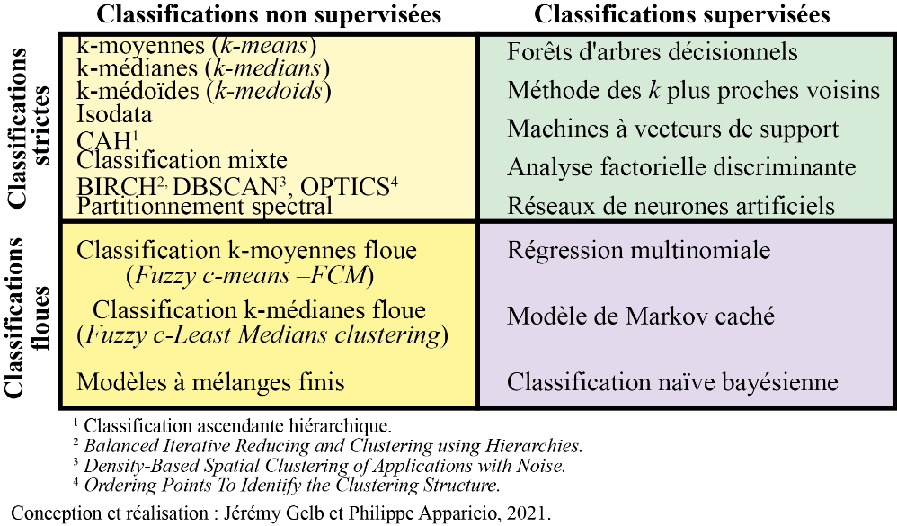

13 Méthodes de classification non supervisée
Dans le cadre de ce chapitre, nous présentons les méthodes les plus utilisées en sciences sociales pour explorer la présence de groupes homogènes au sein d’un jeu de données, soit les méthodes de classification non supervisée. Le qualificatif non supervisé signifie que ces classes/groupes ne sont pas connus a priori et doivent être identifiés à partir des données. Autrement dit, nous cherchons à regrouper les observations partageant des caractéristiques similaires sur la base de plusieurs variables. Ces méthodes descriptives et exploratoires multivariées peuvent être vues comme une façon de réduire le nombre d’observations d’un jeu de données à un ensemble d’observations synthétiques, représentant le mieux possible la population à l’étude.
Liste des packages utilisés dans ce chapitre
- Pour créer des graphiques :
-
ggplot2le seul, l’unique! -
ggpubrpour combiner des graphiques et réaliser des diagrammes.
-
- Outils généraux pour faciliter les classifications :
-
clusterCritpour calculer des indicateurs de qualité de classification. -
NbClustpour trouver le bon nombre de groupe dans une classification. -
clusterpour appliquer la méthode GAP. -
proxypour calculer plusieurs types de distances. -
Gmedianpour calculer le k-médianes. -
geocmeanspour explorer les résultats de classifications floues.
-
Pourquoi recourir à des méthodes de classification non supervisée en sciences sociales?
Les méthodes de classification sont très utilisées en sciences sociales. Elles visent à identifier des groupes cohérents au sein d’un ensemble d’observations sur la base de plusieurs variables (figure fig-ClassifNonNSuperv). Ces groupes peuvent ensuite être analysés et nous renseigner sur les caractéristiques communes partagées par les individus qui les composent.
Un exemple classique est l’identification de profils d’individus ayant répondu à un sondage, en fonction de plusieurs caractéristiques (par exemple, l’âge, le sexe, la situation de famille, le revenu, etc.). En identifiant ces groupes homogènes, il est ensuite possible d’explorer les associations entre ces profils et d’autres variables.
Un second exemple serait de regrouper les secteurs d’une ville selon leurs caractéristiques environnementales (végétation, niveau de bruit, pollution atmosphérique, etc.) et socioéconomiques (revenu médian des ménages, pourcentage d’immigrants, pourcentage de personnes à faible scolarité, taux de chômage, etc.).
13.1 Méthodes de classification : un aperçu
Il existe une multitude de méthodes de classification généralement regroupées dans plusieurs familles imbriquées à partir de deux distinctions importantes.
La première distinction vise à séparer les méthodes supervisées des non supervisées. Pour les premières, les catégories/groupes/classes des observations sont connues à l’avance. L’enjeu n’est pas de trouver les catégories puisqu’elles sont connues, mais de déterminer des règles ou un modèle permettant d’attribuer des observations à ces catégories. Parmi les méthodes de classification supervisée, les plus connues sont les forêts d’arbres décisionnels, les réseaux de neurones artificiels ou encore l’analyse factorielle discriminante. Nous n’abordons pas ces méthodes dans ce chapitre dédié uniquement aux méthodes de classification non supervisée. Pour ces dernières, les catégories ne sont pas connues à l’avance et l’enjeu est de faire ressortir les structures des groupes propres aux données. Ainsi, les méthodes de classification non supervisée « relèvent de la statistique exploratoire multidimensionnelle et permettent de classifier automatiquement les observations sans connaissance a priori sur la nature des classes présentes dans le jeu de données; les plus connues sont sans conteste les algorithmes de classification ascendante hiérarchique (CAH) et du k-means (k-moyennes) » (Gelb et Apparicio 2021, 1). Notez également qu’à la frontière entre ces deux familles, se situent les méthodes de classification semi-supervisée. Il s’agit de cas spécifiques où des informations partielles sont connues sur les groupes à détecter : seulement le groupe final de certaines observations est connu, certaines observations sont supposées appartenir à un même groupe même s’il est indéfini en lui-même (Bair 2013).
La seconde distinction vise à séparer les méthodes strictes des floues. Les premières ont pour objectif d’assigner chaque observation à une et une seule catégorie, alors que les secondes décrivent le degré d’appartenance de chaque observation à chaque catégorie. Autrement dit, « dans une classification stricte, chaque observation appartient à une seule classe. Mathématiquement parlant, l’appartenance à une classe donnée est binaire (0 ou 1) tandis que dans une classification floue, chaque observation a une probabilité d’appartenance variant de 0 à 1 à chacune des classes » (Gelb et Apparicio 2021, 1). Bien entendu, pour chaque observation, la somme des degrés d’appartenance à chacune des classes est égale à 1 (figure fig-floueVSstrict). En termes de données, cela signifie que pour les méthodes strictes, le groupe d’appartenance d’une observation est contenu dans une seule variable nominale (une colonne d’un DataFrame). Pour les méthodes floues, il est nécessaire de disposer d’autant de variables continues (plusieurs colonnes numériques d’un DataFrame), soit une par groupe, dans lesquelles sont enregistrées le degré d’appartenance de chaque observation à chacun des groupes. Parmi les méthodes de classification supervisée floue, notez que nous avons déjà abordé la régression logistique multinomiale dans le chapitre sur les GLM (section sec-0824).
En résumé, le croisement de ces deux distinctions permet ainsi de différencier les méthodes supervisées strictes, supervisées floues, non supervisées strictes et non supervisées floues (figure fig-methoClassif), auxquelles s’ajoutent les méthodes semi-supervisées discutées brièvement.

Dans ce chapitre, nous décrivons les trois méthodes de classification non supervisée les plus utilisées et faciles à mettre en œuvre : la classification ascendante hiérarchique, les nuées dynamiques strictes (k-means et k-medians) et nuées dynamiques floues (c-means et c-medians).
13.2 Notions essentielles en classification
Avant de décrire différentes méthodes de classification non supervisées, il convient de définir deux notions centrales, soit la distance et l’inertie.
13.2.1 Distance
La distance en analyse de données est définie comme une fonction (d) permettant de déterminer à quel point deux observations sont semblables ou différentes l’une de l’autre. Elle doit respecter les conditions suivantes :
la non-négativité : la distance minimale entre deux objets est égale à 0; \(d(x,y) \geq 0\).
le principe d’identité des indiscernables : la distance entre deux objets \(x\) et \(y\) est égale à 0, si \(x = y\); \(d(x,y)=0\text{ si et seulement si }x=y\).
la symétrie : la distance entre \(x\) et \(y\) est la même qu’entre \(y\) et \(x\); \(d(x,y) = d(y,x)\).
le triangle d’inégalité : passer d’un point \(x\) à un point \(z\) est toujours plus court ou égal que de passer par \(y\) entre \(x\) et \(z\); \(d(x,z)\leq d(x,y)+d(y,z)\).
Il existe un grand nombre de types de distance qui peuvent être utilisés pour déterminer le degré de similarité entre les observations. Nous présentons ici les six types les plus fréquemment utilisés en sciences sociales, mais retenez qu’il en existe bien d’autres.
13.2.1.1 Distance euclidienne
Il s’agit vraisemblablement de la distance la plus couramment utilisée, soit la longueur de la ligne droite la plus courte entre les deux objets considérés. Pour la représenter, admettons que nous nous intéressons à trois classes d’étudiants et d’étudiantes A, B et C pour lesquelles nous avons calculé la moyenne de leurs notes dans les cours de méthodes quantitatives et qualitatives. Ces deux variables sont mesurées dans la même unité et varient de 0 à 100. Le nuage de points à la figure fig-dist0 illustre cette situation avec des données fictives.
Les distances euclidiennes entre les classes B et C et les classes C et A sont représentées par les lignes noires à la figure fig-dist1. Nous pouvons constater que la distance entre les classes C et B est plus petite que celle entre les classes A et C, ce qui signale que les deux premières se ressemblent davantage.
La formule de la distance euclidienne (équation eq-euclideandist) est simplement la racine carrée de la somme des écarts au carré pour chacune des variables décrivant les observations a et b.
\[ d(a,b) = \sqrt{\sum{}^v_{i=1}(a_i-b_i)^2} \tag{13.1}\]
avec v le nombre de variables décrivant les observations a et b.
Nous pouvons facilement calculer la distance euclidienne pour notre jeu de données :
- \(d(A,B)=\sqrt{(\mbox{85}-\mbox{80})^2+(\mbox{80}-\mbox{77})^2} = \mbox{5,83}\)
- \(d(B, c)=\sqrt{(\mbox{80}-\mbox{83})^2+(\mbox{79}-\mbox{77})^2} = \mbox{3,60}\)
Distance et unité de mesure
Il est très important de garder à l’esprit que la distance entre deux observations dépend directement des unités de mesure utilisées. Cela est très souvent problématique, car il est rare que toutes les variables utilisées pour décrire des observations soient mesurées dans la même unité. Ainsi, une variable dont les valeurs numériques sont plus grandes risque de déséquilibrer les calculs de distance. À titre d’exemple, une variable mesurée en mètres plutôt qu’en kilomètres produit des distances euclidiennes 1000 fois plus grandes.
Il est donc nécessaire de standardiser les variables utilisées avant de calculer des distances. Cette opération permet de transformer les variables originales vers une échelle commune. Plusieurs types de transformations peuvent être utilisés tels que décrits à la section sec-02552 :
Le centrage et la réduction qui consistent à soustraire de chaque valeur sa moyenne, puis à la diviser par son écart-type. La nouvelle variable obtenue s’exprime alors en écart-type (appelé aussi score-z). La formule de la transformation est \(f(x) = \frac{x - \bar{x}}{\sigma_x}\), avec \(\bar{x}\) la moyenne de \(x\) et \(\sigma_x\) l’écart-type de \(x\).
La transformation sur une mise à l’échelle de 0 à 1 qui permet de modifier l’étendue d’une variable afin que sa valeur maximale soit de 1 et sa valeur minimale soit de 0. La formule de cette transformation est \(f(x) = \frac{x-min(x)}{max(x)-min(x)}\).
La transformation en rang qui consiste à remplacer les valeurs d’une variable par leur rang. La valeur la plus faible est remplacée par 1, et la plus forte par n (nombre d’observations). Notez que cette transformation modifie la distribution de la variable originale contrairement aux deux transformations précédentes. Cette propriété peut être désirable si les écarts absolus entre les valeurs ont peu d’importance, si la variable n’a pas été mesurée avec précision ou encore si des valeurs extrêmes sont présentes.
La transformation en percentile qui consiste à remplacer les valeurs d’une variable par leur percentile correspondant. Elle peut être vue comme une standardisation de la transformation en rang, car elle ne dépend pas du nombre d’observations.
La figure fig-impactTransform montre l’effet de ces transformations sur l’histogramme d’une variable.

13.2.1.2 Distance de Manhattan
Cette seconde distance est également couramment utilisée. Elle doit son nom au réseau de rue de l’île de Manhattan qui suit un plan quadrillé. La distance de Manhattan correspond à la somme des écarts absolus entre les valeurs des différentes variables décrivant les observations (équation eq-manhattandist). La figure fig-dist2 illustre que la distance Manhattan (lignes noires) représente les deux côtés opposés de l’hypoténuse d’un triangle rectangle; l’hypoténuse représentant quant à elle la distance euclidienne.
\[ d(a,b) = \sum{}^v_{i=1}(|a_i-b_i|) \tag{13.2}\]
La distance de Manhattan doit être privilégiée à la distance euclidienne lorsque les données considérées ont un très grand nombre de dimensions (variables). En effet, lorsque le nombre de variables est important (supérieur à 30), la distance euclidienne tend à être grande pour toutes les paires d’observations et à moins bien discriminer les observations proches et lointaines les unes des autres. Du fait de sa nature additive, la distance de Manhattan est moins sujette à ce problème (Aggarwal, Hinneburg et Keim 2001).
Calculons la distance de Manhattan pour nos deux paires d’observations :
- \(d(A,B)=|85-80|+|80-77| = 8\)
- \(d(B, c)=|80-83|+|79-77| = 5\)
13.2.1.3 Distance du khi-deux
La distance du khi-deux est basée sur le test du khi-deux (chapitre sec-chap05) et est généralement utilisée pour calculer la distance entre deux histogrammes, deux images ou deux ensembles de mots. Plus précisément, elle permet de mesure la distance entre deux observations A et B, pour lesquelles nous disposons d’un ensemble de variables étant toutes des variables de comptage.
Prenons un exemple concret en générant trois histogrammes A, B et C sur l’intervalle [0,50] à partir des distributions normale, log-normale et Gamma, puis comptons le nombre de valeurs de chaque unité (1, 2, 3, 4, etc.). Ces histogrammes sont représentés à la figure fig-dist3.
Nous pouvons calculer les distances du khi-deux entre les paires d’histogrammes (tableau tbl-tabdist3). Nous constatons ainsi que les histogrammes B et C sont les plus semblables.
| Histogrammes | Distance du khi-deux |
|---|---|
| A-B | 284,8375 |
| A-C | 376,7862 |
| B-C | 219,5133 |
La formule de cette distance est la suivante :
\[ d_{\chi^2}(a,b) = \frac{1}{2}\sum^n_{i=1}\frac{(a_i-b_i)^2}{(a_i+b_i)} \tag{13.3}\]
avec \(a_i\) et \(b_i\) les comptages pour les histogrammes. Notez que si \(a_i\) et \(b_i\) valent tous les deux 0, il faut retirer ces valeurs avant le calcul, car cela provoquerait une division par 0.
À première vue, cette distance peut paraître moins utile que les deux précédentes. Pourtant, de nombreuses données sont collectées comme des histogrammes. Un premier exemple serait des images que nous pouvons représenter sous forme de trois histogrammes, un pour chaque canal de couleur (rouge, vert et bleu). Un second exemple serait des données sonores, souvent synthétisées sous forme d’histogrammes des fréquences sonores enregistrées (octaves ou tiers d’octaves). Un dernier exemple pourrait être le nombre d’accidents de la route enregistré à diverses intersections d’une ville chaque heure. Dans ce contexte, un histogramme serait formé par l’intersection avec les heures de la journée comme limites des bandes et le nombre d’accidents comme hauteur des bandes.
13.2.1.4 Distance de Mahalanobis
Proposée dans les années 1930 par le statisticien indien Prasanta Chandra Mahalanobis (1936), cette distance se base sur la matrice de covariance des variables analysées. Plus spécifiquement, elle est utilisée pour calculer la distance entre un point et une distribution normale multivariée. Elle permet notamment de tenir compte du fait que certaines variables sont corrélées et ainsi d’éviter de surestimer les distances entre des observations dans des jeux de données comprenant des variables corrélées entre elles.
La formule permettant de calculer cette distance est la suivante :
\[ d(a,b) = \sqrt{(a-b)^TS^{-1}(a-b)} \tag{13.4}\]
avec S étant la matrice de covariance.
13.2.1.5 Distance de Hamming
Cette distance est utilisée quand les écarts entre les variables de deux observations sont uniquement binaires. Un bon exemple serait un jeu de données ne comprenant que des variables qualitatives pouvant avoir une valeur identique pour deux observations (distance = 0) ou différente (distance = 1). La distance de Hamming est la simple addition de ces écarts.
Prenons un exemple très simple en prenant trois maisons pour lesquelles nous connaissons cinq caractéristiques (tableau tbl-dist4).
| couleur | jardin | garage | cheminée | sous-sol |
|---|---|---|---|---|
| blanc | non | oui | oui | non |
| blanc | non | non | oui | non |
| rouge | oui | oui | non | oui |
Nous pouvons utiliser la distance de Hamming pour estimer le niveau de dissimilarité entre ces différentes maisons et l’organiser dans une matrice de distances. À la lecture du tableau tbl-dist5), les maisons 2 et 3 sont les plus dissimilaires (distance de Hamming = 5), et les maisons 1 et 2 les plus similaires (distance de Hamming = 1).
| maison 1 | maison 2 | maison 3 | |
|---|---|---|---|
| maison 1 | 0 | 1 | 4 |
| maison 2 | 1 | 0 | 5 |
| maison 3 | 4 | 5 | 0 |
13.2.1.6 Distance de Gower
La distance de Gower (1971) peut être utilisée pour mesurer la distance entre deux observations lorsque les données sont à la fois qualitatives et quantitatives. Cette distance est comprise dans un intervalle de 0 à 1, 0 signifiant que les deux observations sont identiques et 1, que les observations sont radicalement différentes.
Elle se calcule de la façon suivante :
\[ \begin{aligned} &d(a,b) = 1-\frac{1}{p}\sum^p_{j=1}s_{12j}\\ &\left\{\begin{array}{c} s_{xyj} = 1 \text{ si } x_j = y_j \text{, 0 autrement pour une variable qualitative} \\ s_{xyj} = 1 - \frac{|x_j-y_j|}{max(j)-min(j)} \text{ pour une variable quantitative} \end{array}\right. \end{aligned} \tag{13.5}\]
avec p le nombre de variables, x et y deux observations et j une variable.
Autrement dit, si la valeur d’une variable qualitative diffère entre deux observations, la distance entre ces deux observations augmente de \(1/p\). Pour une variable quantitative, la distance augmente selon la différence absolue entre les valeurs de la variable divisée par l’étendue totale de la variable, le tout à nouveau divisé par p.
Si cette mesure semble intéressante puisqu’elle permet de combiner des variables quantitatives et qualitatives, elle souffre de deux limites importantes :
Elle ne prend pas en compte le fait que certaines modalités des variables qualitatives sont moins fréquentes ni que certaines combinaisons sont également moins fréquentes.
Les variables qualitatives tendent à affecter bien plus la distance que les variables quantitatives. En effet, pour obtenir un écart de 1 sur une variable quantitative, il faut que les deux valeurs soient respectivement le maximum et le minimum de cette variable.
D’autres distances pour des données mixtes
Il existe bien d’autres distances qui peuvent être utilisées dans le cas de données mixtes. Le package kmed en implémente cinq (auxquelles s’ajoute la distance de Gower) dans sa fonction distmix : les distances de Wishart, de Podani, d’Huang, d’Harikumar et d’Ahmad. Ces différentes distances ont toutes leurs avantages et leurs défauts respectifs; pour plus d’information, référez-vous à la documentation de la fonction distmix.
13.2.1.7 Distance du Phi2
La distance du \(\Phi^2\) (Phi2) est une variante de la distance du \(\chi^2\). Il s’agit donc d’une distance à utiliser lorsque les données à analyser sont uniquement qualitatives. Elle calcule la distance entre deux observations en additionnant les différences entre les valeurs de chaque variable (1 si différentes, 0 si identiques, pour chaque variable), divisées respectivement par la fréquence totale d’occurrences de chaque modalité dans le jeu de données. En d’autres termes, cette distance tient compte du fait que certaines valeurs pour des variables qualitatives peuvent être observées plus fréquemment que d’autres et qu’une distance plus grande devrait être obtenue entre deux observations si l’une des deux présente des modalités rares comparativement au reste du jeu de données.
Elle peut être calculée de la façon suivante :
\[ d_{\Phi^2}(i,j) = \frac{1}{Q}\sum_k\frac{(\delta_{ik} - \delta_{jk})^2}{f_k} \tag{13.6}\]
avec i et j deux observations, k une modalité d’une variable qualitative, Q le nombre total de modalités des variables qualitatives, \(\delta_{ik} = 1\) si l’observation i a la modalité k, 0 sinon et \(f_k\) la fréquence de la modalité k dans le jeu de données.
La distance du \(\Phi^2\) est très utile pour analyser les résultats de questionnaires.
13.2.2 Inertie
Une notion importante à saisir dans le cadre des méthodes de classification non supervisée est celui celle l’inertie d’un jeu de données. Elle est proche de la notion de variance qui a été présentée dans le chapitre sur la statistique univariée (section sec-0253).
L’inertie est une quantité permettant de décrire la dispersion des observations d’un jeu de données. Cette mesure dépend à la fois des données (nombres d’observations et de variables, échelle des variables) et de la mesure de distance retenue entre deux observations. Plus spécifiquement, l’inertie correspond à la somme des distances entre chaque observation et le centre du jeu de données.
\[ inertie= \sum{}^n_{i=1} d(c,x_i) \tag{13.7}\]
avec c le centre du jeu de données, n le nombre d’observations, x une observation et d la fonction calculant la distance entre deux observations.
L’enjeu est de définir c dans un contexte où la distance euclidienne est utilisée. Il s’agit simplement d’une observation fictive dont les coordonnées sont les moyennes des différentes variables du jeu de données. Dans le cas d’autres distances, il peut s’agir de l’observation minimisant la distance à toutes les autres observations.
Pour bien visualiser la notion d’inertie, prenons une fois encore le jeu de données IRIS comme exemple. Admettons que nous ne nous intéressons qu’à deux variables de ce jeu de données : sepal.Length et sepal.Width. Nous pouvons représenter l’inertie totale du jeu de données à la figure fig-dist6.

Chaque ligne bleue représente la contribution de chaque point à l’inertie totale du jeu de données. Pour chaque iris, nous connaissons son espèce (Setosa, Versicolor ou Virginica). Nous pouvons donc attribuer chaque point de ce jeu de données à un groupe (une espèce dans notre cas). Il devient alors possible de calculer l’inertie de chacun des sous-groupes de notre jeu de données. Pour cela, nous devons calculer le centre de chaque groupe (généralement les moyennes des variables des observations au sein d’un groupe) et ensuite calculer l’inertie entre chaque observation et le centre de son groupe. Nous représentons cette situation à la figure fig-dist7.
Cette inertie propre aux groupes est toujours inférieure ou égale à l’inertie totale du jeu de données. Il s’agit en réalité de l’inertie que la structure de groupe n’est pas en mesure d’expliquer. En utilisant ces concepts, il est possible de calculer la part de l’inertie totale expliquée par les groupes (équation eq-explainedinertia) :
\[ \text{inertie expliquée} = 1-\frac{\text{inertie totale}}{\text{inertie restante}} \tag{13.8}\]
Cette valeur nous renseigne sur la capacité d’une classification à bien réduire l’inertie totale d’un jeu de données. Elle est comprise entre 0 et 1. Si l’inertie expliquée est à 0, c’est que la classification n’explique absolument aucune part de l’inertie totale. Si l’inertie expliquée est à 1, la classification utilisée explique l’intégralité de l’inertie, ce qui en pratique n’est atteignable que si le nombre de groupes de la classification est égal au nombre d’observations. En d’autres termes, chaque observation est attribuée à un groupe dont elle est la seule représentante. Un telle situation n’a aucun intérêt puisque l’objectif d’une classification est bien de réduire la complexité d’un jeu de données en regroupant les observations.
13.3 Classification ascendante hiérarchique
La classification ascendante hiérarchique (CAH) est un algorithme de classification non supervisée dont l’objectif est de créer un arbre de classification des observations. Cet arbre est ensuite utilisé pour déterminer le nombre de groupes à former et à quel groupe appartient chaque observation.
13.3.1 Fonctionnement de l’algorithme
La classification ascendante hiérarchique est un algorithme permettant de regrouper les observations d’un jeu de données de façon itérative. À chaque itération, deux observations similaires sont agrégées en un groupe représenté par le point central entre les deux observations. Le processus est ensuite répété en considérant le nouveau point comme une observation jusqu’à ce que toutes les observations soient fusionnées en un seul groupe.
Ces regroupements successifs créent un arbre de classification appelé dendrogramme. La racine de cet arbre est le groupe unique fusionnant toutes les observations, et ses branches correspondent aux différentes agrégations effectuées jusqu’aux observations individuelles. Cet arbre peut être vu comme une hiérarchie de classification. Chaque niveau de l’arbre est un regroupement de plus en plus généraliste au fur et à mesure que nous nous approchons de sa racine.
Pour appliquer cette méthode, il est nécessaire de sélectionner une fonction de distance pour mesurer la dissimilarité ou la ressemblance entre deux observations. L’algorithme fonctionne avec n’importe quelle fonction de distance, ce qui permet de l’appliquer aussi bien à des données qualitatives que quantitatives. En effet, l’opération de regroupement des observations se base sur une matrice de distance, soit un tableau de taille n x n indiquant pour chaque paire d’observations leur degré de dissimilarité. La figure fig-tablvsmat illustre cette transformation en appliquant la distance du \(\Phi^2\) à un jeu de données comprenant cinq observations et 5 variables qualitatives.

En plus de la fonction de distance, il est également nécessaire de sélectionner un critère d’agrégation, soit la règle permettant de décider à chaque itération quelles observations doivent être regroupées. Les méthodes les plus courantes sont :
Le critère de Ward (1963) : cette méthode consiste à agréger à chaque itération les deux observations permettant de minimiser la variance (ou l’inertie) intra-groupe, ce qui revient à maximiser l’inertie inter-groupe (autrement dit, à rendre les groupes les plus homogènes possibles et les plus dissemblables entre eux). Ainsi, l’enjeu est de fusionner les deux observations permettant d’avoir les groupes les plus dissimilaires possible après fusion.
Le lien complet : à chaque itération, les deux groupes d’observations associés sont ceux pour lesquels la distance maximale entre les observations les composant est la plus petite parmi tous les groupes.
Le lien simple : à chaque itération, les deux groupes d’observations associés sont ceux pour lesquels la distance minimum entre les observations les composant est la plus petite parmi tous les groupes.
La plus utilisée est de loin la méthode de Ward. La méthode du lien complet produit généralement des résultats similaires. En revanche, la méthode du lien simple peut produire des groupes non sphériques (non centrés sur leur moyenne) plus difficile à interpréter.
Prenons un instant pour visualiser cet algorithme (figure fig-animhclust). Cette animation a été réalisée par David Sheehan et est également accessible sur son blog. Elle présente bien le processus d’agglomération de la classification ascendante hiérarchique et la construction progressive du dendrogramme.

13.3.2 Choisir le bon nombre de groupes
Une fois que l’algorithme a été appliqué aux données et le dendrogramme obtenu, il faut encore choisir le nombre optimal de groupes pour la classification finale. Chaque embranchement du dendrogramme constitue une classification possible, allant de la plus complexe (chaque observation appartient à un groupe formé d’elle seule) à la plus simple (toutes les observations appartiennent au même groupe). Si le nombre de groupes n’est pas connu à l’avance et qu’aucune forte justification théorique n’existe, il est possible d’utiliser plusieurs techniques pour déterminer un nombre de groupes judicieux à partir des données. Nous en présentons ici trois, mais il convient de ne pas s’en tenir uniquement à ses critères arbitraires. Il est important d’explorer les résultats de la classification obtenue pour plusieurs valeurs de k candidates et de tenir compte de la qualité des informations qu’elles fournissent. Au final, il est pertinent de retenir la classification dont les résultats offrent l’interprétation la plus claire avec un nombre de groupes réduit (principe de parcimonie).
13.3.2.1 Méthode du coude
Cette première approche est la plus simple à mettre en œuvre. Il s’agit simplement de produire plusieurs classifications à partir du dendrogramme avec différentes valeurs de k (nombre de groupes) et de calculer à chaque fois la part de l’inertie expliquée. Chaque groupe supplémentaire ne peut qu’améliorer l’inertie expliquée, car pour rappel, si \(k=n\), alors nous expliquons 100 % de l’inertie totale. L’objectif est de déterminer à quel moment l’ajout d’un groupe supplémentaire ne contribue que de façon marginale à améliorer l’inertie expliquée. Si nous représentons les valeurs d’inertie expliquée pour les différentes valeurs de k dans un graphique, une rupture (un coude) indiquerait le point au-delà duquel les groupes supplémentaires ne captent finalement que du bruit et non plus de l’information.
Si nous reprenons l’exemple du jeu de données IRIS, nous pouvons créer ce graphique avec k allant de 2 à 8 (figure fig-kmeans2). Un premier coude très net est observable pour \(k = 3\) et un second plus faible, mais tout de même marqué pour \(k = 4\).

Inertie expliquée et centre de groupe
Pour calculer l’inertie expliquée, il est nécessaire de pouvoir déterminer pour le centre de gravité (ou centroïde) chaque groupe. Lorsque la distance euclidienne est utilisée, il s’agit simplement de calculer pour chaque groupe la valeur moyenne des différentes colonnes des observations. Cependant, lorsque d’autres distances sont utilisées, il peut être plus difficile de déterminer le centre d’un groupe. Avec la distance de Manhattan, il est par exemple recommandé d’utiliser la médiane des colonnes plutôt que la moyenne. Pour la distance de Hamming, la moyenne peut aussi être utilisée, car elle représente pour cette distance la fréquence d’occurrence des différentes modalités des variables qualitatives. Pour d’autres distances plus complexes, il est préférable de définir le centre d’un groupe comme le point de ce groupe minimisant les distances à tous les autres points du groupe. Il s’agit du médoïde du groupe.
13.3.2.2 Indicateur de silhouette
Si un coude net ne s’observe pas pour la méthode précédente, il est possible d’utiliser l’indicateur de silhouette. Il permet de mesurer pour une classification à quel point une observation est similaire à celles dans son propre groupe (cohésion) comparativement aux observations des autres groupes. Elle se calcule de la façon suivante :
\[ \begin{aligned} s(i) &= \frac{b(i)-a(i)}{\max \{a(i), b(i)\}} \\ a(i) &= \frac{1}{|C_i|-1}\sum_{j \in C_i,i \neq j}d(i,j) \\ b(i) &= min_{i \neq j}\frac{1}{|C_j|}\sum_{j \in C_j}d(i,j) \end{aligned} \tag{13.9}\]
avec \(s(i)\) la valeur de l’indice de silhouette pour l’observation i, \(a(i)\) la distance moyenne entre l’observation i et son groupe \(C_i\) et \(b(i)\) la distance minimale entre l’observation i et le centre de chaque autre groupe \(C_j\).
La valeur totale de l’indice est simplement la moyenne des valeurs moyennes des indices de silhouette au sein de chaque groupe. Une valeur plus élevée indique une meilleure classification. Il est nécessaire de déterminer le centre des groupes pour calculer cet indicateur, ce qui peut être un exercice difficile quand une distance autre que la distance euclidienne est utilisée. Référez-vous à la note de la section précédente pour plus d’informations. L’indice de silhouette semble indiquer que seulement trois groupes serait un choix optimal, soit la valeur la plus haute (figure fig-kmeans3).

13.3.2.3 Méthode GAP
Cette méthode, proposée par Tibshirani, Walther et Hastie (2001), consiste à comparer l’inertie intra-groupe (inexpliquée) avec l’inertie observée pour un jeu de données généré aléatoirement (distribution uniforme des valeurs entre le minimum et le maximum de chaque variable) pour différentes valeurs successives de k. Une fois ces calculs effectués, l’objectif est de trouver la valeur de k telle que la valeur de GAP à k + 1 n’est pas plus grande qu’un écart type pour GAP à k + 1.
La statistique GAP est calculée ainsi :
\[ \begin{aligned} GAP(k) = \frac{1}{\text{nsim}} \sum^{\text{nsim}}_{\text{sim} = 1} log(W_{ksim}) - log(W_k) \end{aligned} \tag{13.10}\]
avec \(W_k\) l’inertie non expliquée (intra-groupe), \(W_{ksim}\) l’inertie non expliquée (intra-groupe) obtenue pour un jeu de données simulé et k le nombre de groupes.
L’idée est qu’une bonne classification doit produire des résultats plus structurés que ce que nous pourrions attendre du hasard. Chaque groupe supplémentaire permet de réduire l’inertie, mais lorsque l’ajout d’un groupe ne permet pas un gain significatif comparativement au hasard, alors l’ajout de ce groupe ne se justifie pas. À nouveau, il est possible de visualiser la situation avec un simple graphique (figure fig-kmeans4). Selon cette méthode, il faudrait sélectionner quatre groupes, car il s’agit de la première valeur de k validant le critère de cette méthode. La seconde valeur retenue par cette méthode est 6.

13.3.3 Limites de la classification ascendante hiérarchique
Bien que très flexible (choix de la fonction de distance et du critère d’agrégation), la CAH fait face à un enjeu majeur : la vitesse d’exécution et la consommation de mémoire lorsque de grands jeux de données sont utilisés. En effet, il est nécessaire de calculer à chaque étape une matrice de distance entre les groupes. Si un jeu de données comprend 1000 observations, cette matrice comprend donc 1000 x 1000 cases, soit un million de distances. Même en divisant ce nombre par deux (les éléments de la matrice sont symétriques, donc \(d(ij) = d(ji)\)), ce nombre augmente avec le carré du nombre d’observations. Pour de grands jeux de données, la CAH peut donc échouer à cause des limites de l’ordinateur utilisé. Il existe des versions plus performantes de l’algorithme réduisant cette limite, mais il convient de la garder en mémoire. Quand un très grand jeu de données doit être analysé, les méthodes des nuées dynamiques sont une solution à considérer.
13.3.4 Mise en œuvre dans R
Nous proposons ici un exemple issu d’un article portant sur les parcs urbains de Montréal (Apparicio et al. 2010), dont l’objectif était notamment de classifier ces parcs en fonction de leur superficie et des équipements qu’ils comprennent, et ce, en utilisant la classification ascendante hiérarchique. Nous proposons ici de reproduire l’étape de classification effectuée dans cet article. La base de données comporte 653 parcs pour lesquels la présence de 18 équipements est codée comme un ensemble de variables binaires (0 signifiant absence et 1 présence). Nous disposons également de la taille de ces parcs, recodée en cinq catégories : moins d’un hectare, de 1 à 5 hectares, de 5 à 10 hectares, de 10 à 20 hectares et 20 hectares et plus. Le tableau tbl-exampleHclust1DF indique le nombre d’équipements recensés dans les parcs.
| Équipements | N |
|---|---|
| Équipements pour les 0 à 4 ans | |
| Aire de jeux | 601 |
| Pataugeoire | 161 |
| Jeux d’eau | 28 |
| Terrains de sport | |
| Baseball | 188 |
| Soccer (football) | 169 |
| Basketball | 144 |
| Tennis | 125 |
| Football | 36 |
| Volleyball | 24 |
| Athlétisme | 20 |
| Équipements d'hiver | |
| Patinoire extérieure | 241 |
| Glissade | 30 |
| Piste de ski de fond | 14 |
| Piste de raquette | 9 |
| Équipements spécialisés | |
| Parc de planches à roulettes | 18 |
| Patins à roues alignées | 8 |
| Autres équipements | |
| Piscine intérieure | 92 |
| Chemin de randonnée | 15 |
Puisque notre jeu de données ne comporte que des variables qualitatives, nous utilisons la distance du \(\Phi^2\) pour construire notre matrice de distance entre les parcs. Notons que, dans l’article original, la distance euclidienne au carré avait été utilisée, alors nous n’obtiendrons probablement pas les mêmes résultats, car la distance du \(\Phi^2\) tient compte des fréquences d’occurrence des modalités des variables qualitatives.
13.3.4.1 Calcul de la matrice de distance
La première étape consiste donc à charger notre jeu de données et à calculer la matrice de distance.
Pour calculer la distance du \(\Phi^2\), nous utilisons la fonction dist du package proxy avec le paramètre method = "Phi-squared". Elle requiert que l’ensemble des variables catégorielles soient converties en variables binaires. Pour cela, nous pouvons utiliser la fonction dummy_cols du package fastDummies.
library(fastDummies)
library(proxy)
X <- dummy_cols(X, select_columns = "HaTypo", remove_selected_columns = TRUE)
parc_distances <- dist(as.matrix(X), method = "Phi-squared")13.3.4.2 Application de l’algorithme de classification ascendante hiérarchique
Une fois la matrice obtenue, il ne reste plus qu’à appliquer la fonction hclust disponible de base dans R pour obtenir le dendrogramme. Comme dans l’article, nous utilisons le critère d’agrégation de Ward pour la création des groupes.
dendogramme_parcs <- hclust(parc_distances, method = "ward.D")Puisque nous n’utilisons pas la distance euclidienne, nous optons ici pour l’indice de silhouette pour déterminer le nombre adéquat de groupes à former. Nous testons toutes les valeurs comprises entre 2 et 10.
library(cluster)
ks <- 2:10
# Calcul des indices de silhouette pour les différentes valeurs de k
values <- sapply(ks, function(k){
# découpage du dendrogramme
groupes <- cutree(dendogramme_parcs, k = k)
# calcul des valeurs de silhouette
sil <- silhouette(groupes, dist = parc_distances)
# extraction de l'indice global (moyenne des moyennes)
idx <- mean(summary(sil)$clus.avg.widths)
return(idx)
})
# Création d'un graphique avec les résultats
df <- data.frame(k = ks, silhouette = values)
ggplot(df) +
geom_line(aes(x = k, y = silhouette)) +
geom_point(aes(x = k, y = silhouette), color = "red") +
labs(x = "nombre de groupes", y = "indice global de silhouette")
Si nous écartons d’emblée les résultats pour k = 2 et k = 3 (trop peu de groupes pour l’interprétation), nous constatons que la solution optimale selon ce critère est k = 5. Dans l’article original, la solution k = 6 avait été retenue en examinant le dendrogramme. Comparons les résultats pour k = 5 et k = 6.
resk5 <- cutree(dendogramme_parcs, k = 5)
resk6 <- cutree(dendogramme_parcs, k = 6)
sil5 <- silhouette(resk5, dist = parc_distances)
sil6 <- silhouette(resk6, dist = parc_distances)
# résumé pour l'indice de silhouette pour k = 5
summary(sil5)Silhouette of 693 units in 5 clusters from silhouette.default(x = resk5, dist = parc_distances) :
Cluster sizes and average silhouette widths:
116 212 246 84 35
0.07029553 1.00000000 -0.11827930 -0.19969707 1.00000000
Individual silhouette widths:
Min. 1st Qu. Median Mean 3rd Qu. Max.
-0.62041 -0.08502 0.09814 0.30200 1.00000 1.00000 # résumé pour l'indice de silhouette pour k = 6
summary(sil6)Silhouette of 693 units in 6 clusters from silhouette.default(x = resk6, dist = parc_distances) :
Cluster sizes and average silhouette widths:
116 212 197 49 84 35
0.05906553 1.00000000 -0.10289391 0.07935325 -0.19969707 1.00000000
Individual silhouette widths:
Min. 1st Qu. Median Mean 3rd Qu. Max.
-0.62041 -0.06414 0.10998 0.31846 1.00000 1.00000 Nous constatons que le groupe supplémentaire vient séparer le groupe trois comprenant 246 parcs dans la solution avec k = 5. Ce dernier ne comprend plus que 197 parcs pour la solution k = 6 et le nouveau groupe en compte 49. Ce nouveau groupe à un indice de silhouette moyen relativement faible (0,079), et le fait de découper le groupe trois améliore très peu sa propre valeur (passant de -0,12 à -0,10). Nous retenons cependant ici la solution avec k = 6 afin de tenter de reproduire les résultats de l’article.
13.3.4.3 Interprétation des résultats
La dernière étape consiste à identifier les groupes obtenus et leur attribuer un intitulé en fonction de leurs caractéristiques. Dans notre cas, la classification ne comporte que des variables binaires, nous pouvons donc calculer le pourcentage de valeurs à 1 (présence d’un équipement) dans chacun des groupes.
# calcul du nombre de fois où chaque modalité est observée dans un groupe
X$groupe <- resk6
df_groupes <- X %>%
group_by(groupe) %>% summarise_all(.funs = sum)
# calcul du nombre d'observations par groupe
nb_gp <- table(resk6)
groupe_ratios <- round(100 * as.matrix(df_groupes)[,2:ncol(df_groupes)] / as.vector(nb_gp),1)
groupe_ratios <- as.data.frame(t(groupe_ratios))
names(groupe_ratios) <- paste0("groupe ", 1:ncol(groupe_ratios))
# calcul du nombre moyen d'équipements par catégorie par parc
equip_class <- list(
c("AIRE_JEUX", "JEUX_EAU", "PATAUGEOIRE"),
c("ATHLETISME", "BASEBALL_S", "BASKETBALL", "FOOTBALL", "SOCCER", "TENNIS", "VOLLEY_BALL"),
c("TOBBOGAN_G", "PATINOIRE_E", "RAQUETTES", "SKI_FOND"),
c("PATIN_ROUE", "ROULI_ROUL"),
c("PISC_EXT", "RANDONNEE")
)
class_compte <- data.frame(sapply(equip_class, function(equip){
rowSums(X[equip])
}))
names(class_compte) <- c("enfants", "terrain_sport", "hiver", "specialise", "autre")
class_compte$groupe <- resk6
df_class_equip <- class_compte %>%
group_by(groupe) %>%
summarise_all(mean)
df_class_equip <- t(df_class_equip[2:ncol(df_class_equip)])
colnames(df_class_equip) <- paste0("groupe ", 1:ncol(df_class_equip))
# comptage du nombre moyen total d'équipements
df_equip_tot <- data.frame(
nb = rowSums(X[1:18]),
groupe = resk6
)
df_equip_tot_mean <- df_equip_tot %>%
group_by(groupe) %>%
summarize_all(mean)
# mise dans l'ordre de la première partie du tableau
all_types <- do.call(c, equip_class)
idxs <- match(all_types, row.names(groupe_ratios[1:length(all_types),]))
groupe_ratios <- rbind(groupe_ratios[idxs,],
groupe_ratios[(length(all_types)+1):nrow(groupe_ratios),])
# combinaison des deux tableaux
groupe_ratios <- rbind(groupe_ratios, df_class_equip, df_equip_tot_mean$nb, as.integer(nb_gp))Il est ensuite possible d’afficher le tableau obtenu pour l’interpréter. Les résultats sont ici rapportés au tableau tbl-exampleHclust7.
| groupe 1 | groupe 2 | groupe 3 | groupe 4 | groupe 5 | groupe 6 | |
|---|---|---|---|---|---|---|
| Équipements pour les 0 à 4 ans (%) | ||||||
| Aire de jeux | 69,8 | 100 | 83,2 | 71,4 | 88,1 | 100 |
| Jeux d'eau | 7,8 | 0 | 2,5 | 18,4 | 6,0 | 0 |
| Pataugeoire | 36,2 | 0 | 47,2 | 2,0 | 29,8 | 0 |
| Terrains de sport (%) | ||||||
| Athlétisme | 12,1 | 0 | 2,0 | 2,0 | 1,2 | 0 |
| Baseball | 62,1 | 0 | 50,8 | 0,0 | 19,0 | 0 |
| Basketball | 37,9 | 0 | 36,0 | 16,3 | 21,4 | 0 |
| Football américain | 15,5 | 0 | 7,1 | 8,2 | 0,0 | 0 |
| Soccer (football) | 52,6 | 0 | 29,9 | 87,8 | 7,1 | 0 |
| Tennis | 38,8 | 0 | 32,5 | 8,2 | 14,3 | 0 |
| Volleyball | 7,8 | 0 | 4,6 | 12,2 | 0,0 | 0 |
| Équipements d'hiver (%) | ||||||
| Glissade | 19,8 | 0 | 3,0 | 2,0 | 0,0 | 0 |
| Patinoire | 58,6 | 0 | 59,4 | 34,7 | 46,4 | 0 |
| Piste de ski de fond | 7,8 | 0 | 0,0 | 0,0 | 0,0 | 0 |
| Raquettes | 12,1 | 0 | 0,0 | 0,0 | 0,0 | 0 |
| Équipements spécialisés (%) | ||||||
| Parc de planches à roulettes | 6,0 | 0 | 0,5 | 0,0 | 0,0 | 0 |
| Patins à roues alignées | 8,6 | 0 | 4,1 | 0,0 | 0,0 | 0 |
| Autres équipements (%) | ||||||
| Piscine extérieure | 27,6 | 0 | 27,4 | 4,1 | 4,8 | 0 |
| Chemin de randonnée | 12,9 | 0 | 0,0 | 0,0 | 0,0 | 0 |
| Superficie (%) | ||||||
| Moins d'un hectare | 0,0 | 100 | 0,0 | 0,0 | 100,0 | 0 |
| 1 à 5 hectares | 5,2 | 0 | 98,5 | 100,0 | 0,0 | 100 |
| 5 à 10 hectares | 61,2 | 0 | 0,0 | 0,0 | 0,0 | 0 |
| 10 à 20 hectares | 17,2 | 0 | 1,0 | 0,0 | 0,0 | 0 |
| 20 hectares et plus | 16,4 | 0 | 0,5 | 0,0 | 0,0 | 0 |
| Nombre moyen d'équipements selon le type | ||||||
| Équipements pour les 0 à 4 ans | 1,1 | 1 | 1,3 | 0,9 | 1,2 | 1 |
| Terrains de sport | 2,3 | 0 | 1,6 | 1,3 | 0,6 | 0 |
| Équipements d'hiver | 1,0 | 0 | 0,6 | 0,4 | 0,5 | 0 |
| Équipements spécialisés | 0,1 | 0 | 0,0 | 0,0 | 0,0 | 0 |
| Autres équipements | 0,4 | 0 | 0,3 | 0,0 | 0,0 | 0 |
| Tous les équipements | 4,9 | 1 | 3,9 | 2,7 | 2,4 | 1 |
| Nombre d'observations par groupe | ||||||
| 116,0 | 212 | 197,0 | 49,0 | 84,0 | 35 | |
Le premier groupe correspond à de grands parcs (superficie généralement comprise entre 5 et plus de 20 hectares), il comporte 116 observations. Ces grands parcs sont en moyenne équipés de deux terrains de sport et d’un équipement d’hiver. Il s’agit vraisemblablement des grands parcs identifiés dans l’article original, dans lesquels se retrouvent également les parcs à vocation métropolitaine.
Le second groupe (212 parcs) correspond à de très petits parcs (moins d’un hectare) comportant uniquement une aire de jeu.
Le troisième groupe (197 parcs) correspond à de petits parcs (entre 1 et 5 hectares), souvent équipés d’une piscine extérieure (27,4 % des cas), et en moyenne de deux terrains de sports (essentiellement des terrains de tennis et de soccer). Ces parcs comprennent en moyenne plus de 4 équipements et doivent donc correspondre à la classe D dans l’article original (Petit parc (1 à 5 ha) avec en moyenne six équipements, dont une patinoire et une piscine).
Le quatrième groupe (49 parcs) comprend de petits parcs (entre 1 et 5 hectares) qui ressemblent aux parcs du groupe 2 mais tendent à disposer en plus d’un terrain de sport (baseball ou basketball).
Le quatrième groupe (84 parcs) correspond à de petits parcs, il est caractérisé par une présence plus marquée de pataugeoires (39 %).
Le cinquième groupe (35 parcs) est très similaire au second groupe (uniquement une aire de jeux), excepté sont les parcs qui s’y trouvent sont de taille supérieure (de 1 à 5 hectares).
Considérant les différences minimes entre certains des groupes que nous avons obtenus, il est clair que retenir seulement trois ou cinq groupes serait préférable. Notez également l’importance du choix de la distance, car nous obtenons des résultats sensiblement différents de ceux de l’article original en ayant opté pour la distance du \(\Phi^2\) plutôt que la distance euclidienne au carré.
13.3.4.4 Utilisation de la matrice de distance euclidienne au carré
Pour obtenir des résultats plus proches de ceux de l’article original, nous pouvons reprendre notre analyse et utiliser cette fois-ci une distance euclidienne au carré.
X$groupe <- NULL
# calcule de la matrice de distance
parc_distances_euc <- dist(as.matrix(X), method = "Euclidean")**2
# Application de la CAH
dendogramme_parcs_euc <- hclust(parc_distances_euc, method = "ward.D")
# calcul de l'indice de silhouette
ks <- 2:10
values <- sapply(ks, function(k){
# découpage du dendrogramme
groupes <- cutree(dendogramme_parcs_euc, k = k)
# calcul des valeurs de silhouette
sil <- silhouette(groupes, dist = parc_distances_euc)
# extraction de l'indice global (moyenne des moyennes)
idx <- mean(summary(sil)$clus.avg.widths)
return(idx)
})
# création d'un graphique avec les résultats
df <- data.frame(
k = ks,
silhouette = values
)
ggplot(df) +
geom_line(aes(x = k, y = silhouette)) +
geom_point(aes(x = k, y = silhouette), color = "red") +
labs(x = "nombre de groupes", y = "indice global de silhouette")Nous constatons cette fois-ci, que quatre groupes serait probablement le meilleur choix et qu’au-delà de ce nombre, l’indice global de silhouette ne fait que diminuer. Tentons cependant de reproduire les résultats de l’article avec k = 6.
resk6 <- cutree(dendogramme_parcs_euc, k = 6)
# calcul du nombre de fois ou chaque modalité est observée dans un groupe
X$groupe <- resk6
df_groupes <- X %>%
group_by(groupe) %>% summarise_all(.funs = sum)
# calcul du nombre d'observations par groupe
nb_gp <- table(resk6)
groupe_ratios <- round(100 * as.matrix(df_groupes)[,2:ncol(df_groupes)] / as.vector(nb_gp),1)
groupe_ratios <- as.data.frame(t(groupe_ratios))
names(groupe_ratios) <- paste0("groupe ", 1:ncol(groupe_ratios))
# calcul du nombre moyen d'équipements par catégorie par parc
equip_class <- list(
c("AIRE_JEUX", "JEUX_EAU", "PATAUGEOIRE"),
c("ATHLETISME", "BASEBALL_S", "BASKETBALL", "FOOTBALL", "SOCCER", "TENNIS", "VOLLEY_BALL"),
c("TOBBOGAN_G", "PATINOIRE_E", "RAQUETTES", "SKI_FOND"),
c("PATIN_ROUE", "ROULI_ROUL"),
c("PISC_EXT", "RANDONNEE")
)
class_compte <- data.frame(sapply(equip_class, function(equip){
rowSums(X[equip])
}))
names(class_compte) <- c("enfants", "terrain_sport", "hiver", "specialise", "autre")
class_compte$groupe <- resk6
df_class_equip <- class_compte %>%
group_by(groupe) %>%
summarise_all(mean)
df_class_equip <- t(df_class_equip[2:ncol(df_class_equip)])
colnames(df_class_equip) <- paste0("groupe ", 1:ncol(df_class_equip))
# comptage du nombre moyen d'équipements
df_equip_tot <- data.frame(
nb = rowSums(X[1:18]),
groupe = resk6
)
df_equip_tot_mean <- df_equip_tot %>%
group_by(groupe) %>%
summarize_all(mean)
# mise dans l'ordre de la première partie du tableau
all_types <- do.call(c, equip_class)
idxs <- match(all_types, row.names(groupe_ratios[1:length(all_types),]))
groupe_ratios <- rbind(groupe_ratios[idxs,],
groupe_ratios[(length(all_types)+1):nrow(groupe_ratios),])
# combinaison des deux tableaux
groupe_ratios <- rbind(groupe_ratios, df_class_equip, df_equip_tot_mean$nb, as.integer(nb_gp))Recréons le tableau final des résultats au tableau tbl-exampleHclust10. Si vous comparez ce tableau avec celui de l’article original, vous verrez que notre groupe 3 correspond exactement à la classe A et que notre groupe 5 correspond exactement à la classe F. Pour les autres groupes, nous pouvons observer de légères variations, ce qui correspond vraisemblablement à des divergences d’implémentation des algorithmes entre le logiciel utilisé pour l’article (SAS) et R.
| groupe 1 | groupe 2 | groupe 3 | groupe 4 | groupe 5 | groupe 6 | |
|---|---|---|---|---|---|---|
| Équipements pour les 0 à 4 ans (%) | ||||||
| Aire de jeux | 79,6 | 74,2 | 96,6 | 100,0 | 20,0 | 79,3 |
| Jeux d'eau | 11,1 | 3,0 | 1,7 | 5,1 | 0,0 | 5,9 |
| Pataugeoire | 59,3 | 42,4 | 8,4 | 61,0 | 0,0 | 19,7 |
| Terrains de sport (%) | ||||||
| Athlétisme | 13,0 | 15,2 | 0,3 | 0,0 | 0,0 | 1,0 |
| Baseball | 88,9 | 63,6 | 5,4 | 89,8 | 6,7 | 13,8 |
| Basketball | 83,3 | 30,3 | 6,1 | 35,6 | 0,0 | 18,2 |
| Football | 31,5 | 12,1 | 0,0 | 10,2 | 0,0 | 2,5 |
| Soccer (football) | 75,9 | 57,6 | 2,0 | 27,1 | 0,0 | 33,5 |
| Tennis | 90,7 | 19,7 | 4,1 | 35,6 | 0,0 | 14,8 |
| Volleyball | 20,4 | 3,0 | 0,0 | 1,7 | 0,0 | 4,9 |
| Équipements d'hiver (%) | ||||||
| Glissade | 14,8 | 16,7 | 0,0 | 1,7 | 33,3 | 2,5 |
| Patinoire | 87,0 | 57,6 | 13,2 | 86,4 | 26,7 | 30,5 |
| Piste de ski de fond | 1,9 | 1,5 | 0,0 | 0,0 | 46,7 | 0,0 |
| Raquettes | 0,0 | 1,5 | 0,0 | 0,0 | 86,7 | 0,0 |
| Équipements spécialisés (%) | ||||||
| Parc de planches à roulettes | 0,0 | 0,0 | 0,0 | 1,7 | 46,7 | 0,0 |
| Patins à roues alignées | 16,7 | 7,6 | 0,0 | 5,1 | 0,0 | 0,5 |
| Autres équipements (%) | ||||||
| Piscine extérieure | 75,9 | 16,7 | 1,4 | 11,9 | 6,7 | 13,8 |
| Chemin de randonnée | 1,9 | 0,0 | 0,0 | 0,0 | 93,3 | 0,0 |
| Superficie (%) | ||||||
| Moins d'un hectare | 0,0 | 0,0 | 100,0 | 0,0 | 0,0 | 0,0 |
| 1 à 5 hectares | 42,6 | 1,5 | 0,0 | 98,3 | 0,0 | 99,5 |
| 5 à 10 hectares | 46,3 | 69,7 | 0,0 | 0,0 | 0,0 | 0,0 |
| 10 à 20 hectares | 1,9 | 27,3 | 0,0 | 0,0 | 13,3 | 0,5 |
| 20 hectares et plus | 9,3 | 1,5 | 0,0 | 1,7 | 86,7 | 0,0 |
| Nombre moyen d'équipements selon le type | ||||||
| Équipements pour les 0 à 4 ans | 1,5 | 1,2 | 1,1 | 1,7 | 0,2 | 1,0 |
| Terrains de sport | 4,0 | 2,0 | 0,2 | 2,0 | 0,1 | 0,9 |
| Équipements d'hiver | 1,0 | 0,8 | 0,1 | 0,9 | 1,9 | 0,3 |
| Équipements spécialisés | 0,2 | 0,1 | 0,0 | 0,1 | 0,5 | 0,0 |
| Autres équipements | 0,8 | 0,2 | 0,0 | 0,1 | 1,0 | 0,1 |
| Tous les équipements | 7,5 | 4,2 | 1,4 | 4,7 | 3,7 | 2,4 |
| Nombre d'observations par groupe | ||||||
| 54,0 | 66,0 | 296,0 | 59,0 | 15,0 | 203,0 | |
13.4 Nuées dynamiques
Les méthodes des nuées dynamiques regroupent plusieurs algorithmes, tous plus ou moins liés avec l’algorithme le plus connu : k-means, originalement proposé par James MacQueen (1967). Nous présentons également ici plusieurs variantes du k-means, soit le k-medians, le k-medioids, le c-means et le c-medians.
13.4.1 K-means
13.4.1.1 Fonctionnement de l’algorithme
Nous commençons ici par détailler le fonctionnement de cet algorithme afin de mieux le cerner. D’emblée, cet algorithme nécessite que certains éléments soient définis d’avance :
Une matrice de données X comportant n lignes (nombre d’observations) et p colonnes (nombre de variables). Chaque variable de cette matrice doit être quantitative et continue et de préférence dans une échelle standardisée (par exemple des variables centrées réduites).
Le nombre de groupes à identifier k doit être choisi par l’utilisateur ou l’utilisatrice.
La distance d à utiliser entre les observations.
Le fonctionnement classique du k-means est le suivant :
Définir k centres de groupes de façon aléatoire.
Déterminer pour chaque observation le centre de son groupe le plus proche en utilisant la fonction de distance.
Pour chacun des groupes ainsi formés, recalculer le centre du groupe en calculant le centroïde (moyennes le plus souvent) des observations appartenant à ce groupe.
Répéter l’opération 2 avec les nouveaux centres.
Calculer l’inertie expliquée par la nouvelle classification.
Comparer cette inertie expliquée avec celle obtenue lors de l’itération précédente.
Si la variation entre les deux valeurs est supérieure à une certaine limite, reprendre à l’étape 2, sinon, l’algorithme prend fin.
Ainsi, l’algorithme k-means part d’une première classification obtenue aléatoirement et la raffine jusqu’au point où l’amélioration de la classification devient négligeable. Du fait de ce point de départ aléatoire, cet algorithme est dit heuristique, car deux exécutions risquent de ne pas donner exactement le même résultat. Par conséquent, en relaçant l’algorithme, vous pourriez obtenir des résultats légèrement différents, avec par exemple des groupes similaires, mais obtenus dans un autre ordre, le groupe 1 étant devenu le groupe 3 et vice-versa. Il est aussi possible d’obtenir des résultats radicalement différents d’une tentative à l’autre, ce qui signifie que les groupes formés sont très instables et ne sont pas représentatifs de la population étudiée.
Réplicabilité des résultats dans R
Lorsqu’une méthode heuristique ou faisant appel au hasard est utilisée dans R, il est nécessaire de s’assurer que les résultats sont reproductibles. Cela permet notamment de relancer le même code et de réobtenir exactement les mêmes résultats : l’idée étant de figer le hasard.
Ultimement, un programme informatique est incapable de générer un résultat véritablement aléatoire, car il ne fait que suivre une suite d’opérations prédéterminées. Pour générer des résultats qui ressemblent au hasard, des algorithmes ont été proposés, partant d’une configuration initiale et appliquant une série d’opérations complexes permettant de générer des nombres semblant se distribuer aléatoirement. Si nous connaissons le point de départ de la suite d’opérations et que nous réappliquons ces dernières, alors nous sommes certains d’obtenir le même résultat. Il est possible, dans R, de définir un état initial de hasard à l’aide de la fonction set.seed. Avec ce point de départ défini, nous sommes certains d’obtenir les mêmes résultats en relançant les mêmes opérations.
Prenons un exemple concret en sélectionnant aléatoire 3 chiffres dans un vecteur allant de 1 à 10.
vec <- 1:10
# prenons un premier échantillon
sample(vec, size = 3)[1] 4 9 3# et un second échantillon
sample(vec, size = 3)[1] 6 10 8Nous obtenons bien deux échantillons différents. Recommençons en utilisant la fonction set.seed pour obtenir cette fois-ci des résultats identiques.
[1] 3 10 2[1] 3 10 2[1] 5 6 7[1] 5 6 7Vous constatez que nous utilisons cette fonction plusieurs fois au cours de cette section. Elle nous permet de nous assurer que les résultats obtenus ne changent pas entre le moment où nous écrivons le livre et le moment où nous le formatons. Sinon, le texte pourrait ne plus être en phase avec les images ou les tableaux.
Pour mieux comprendre le fonctionnement du k-means, nous proposons ici une visualisation de ses différentes itérations (figure fig-kmeansA). Nous pouvons constater que, pour ce jeu de données relativement simple, l’algorithme converge très rapidement et que sa solution varie peu au-delà de la troisième itération. L’amination de la figure fig-kmeansA illustre pourquoi le k-means est appelé algorithme de nuées dynamiques.

Centre de groupe et k-means
À nouveau, puisque chaque itération du k-means nécessite de recalculer les centres des groupes formés, des problèmes peuvent être rencontrés avec certains types de distance. C’est pourquoi il est recommandé d’utiliser la distance euclidienne avec le k-means original. Si des distances plus complexes doivent être utilisées, il est préférable d’utiliser la classification ascendante hiérarchique.
13.4.1.2 Choix du nombre optimal de groupes
Comme pour la CAH, le principal enjeu avec le k-means est de déterminer le nombre idéal de groupes pour effectuer la classification. Si ce nombre n’est pas connu à l’avance et qu’aucune forte justification théorique n’existe, il est possible d’utiliser les mêmes techniques que pour la CAH, soit la méthode du coude, l’indicateur de silhouette ou la méthode GAP.
13.4.2 K-médianes
Le k-medians est une variante du k-means. Contrairement au k-means privilégiant la distance euclidienne, le k-medians est à utiliser en priorité avec une distance de Manhattan. En effet, le centre d’un groupe n’est pas déterminé comme la moyenne des variables des observations appartenant à ce groupe (k-means), mais comme la médiane pour chaque variable (k-medians). En dehors de ces deux spécificités, il reprend le fonctionnement décrit plus haut pour le k-means. Il est particulièrement pertinent de l’utiliser quand un jeu de données comprend un très grand nombre de colonnes, car dans ce contexte, la distance euclidienne peine à représenter les différences entre les observations. De plus, l’utilisation de la médiane le rend moins sensible aux valeurs extrêmes.
13.4.3 K-médoïds
Le k-médoïds est également une variante du k-means. Le k-means crée des groupes en cherchant les centres de ces groupes dans l’espace multidimensionnel des données. Ces centres de groupes peuvent très bien ne pas correspondre à un point du jeu de données, au même titre que la moyenne d’une variable ne coïncide que rarement avec une observation réelle de cette variable. Pour le k-médoïds, les groupes sont formés en cherchant les centres de ces groupes parmi les observations du jeu de données. Ainsi, chaque groupe est centré sur une observation réelle, la plus similaire à l’ensemble des observations du groupe.
L’algorithme effectue les opérations suivantes :
Sélectionner aléatoirement k observations du jeu de données, elles constituent les centres des groupes initiaux.
Attribuer chaque observation au centre du groupe le plus proche.
Tant que la nouvelle solution est plus efficace, effectuer les opérations suivantes :
- pour chaque centre m et pour chaque observation o,
- considérer l’inversion de m et o
- si cette permutation est meilleure que les précédentes, la conserver en mémoire
- effectuer la meilleure permutation retenue si elle améliore la classification, sinon l’algorithme prend fin.
Le k-médoïds est moins utilisé que le k-means, mais il est plus performant quand des distances autres que la distance euclidienne sont utilisées ou encore que des valeurs aberrantes/extrêmes sont présentes dans les données.
13.4.4 Mise en œuvre dans R
Pour cet exemple, nous proposons d’utiliser le jeu de données spatiales LyonIris du package geocmeans. Ce jeu de données spatiales pour l’agglomération lyonnaise (France) comprend dix variables, dont quatre environnementales (EN) et six socioéconomiques (SE), pour les îlots regroupés pour l’information statistique (IRIS) de l’agglomération lyonnaise (tableau tbl-datageocmeans et figure fig-datacartoacp). Nous proposons de réaliser une analyse similaire à celle de l’article de Gelb et Apparicio (2021), soit de classer les IRIS de Lyon selon ces caractéristiques pour déterminer si certains groupes d’IRIS combinent des situations désavantageuses sur les plans sociaux et environnementaux, dans une perspective d’équité environnementale.
Notez ici que la fonction st_drop_geometry provenant du package sf permet de retirer l’information géographique du jeu de données LyonIris pour obtenir un simple dataframe.
| Nom | Intitulé | Type | Moy. | E.-T. | Min. | Max. | |
|---|---|---|---|---|---|---|---|
| Lden | Lden | Bruit routier (Lden dB(A)) | EN | 55,6 | 4,9 | 33,9 | 71,7 |
| NO2 | NO2 | Dioxyde d’azote (ug/m3) | EN | 28,7 | 7,9 | 12,0 | 60,2 |
| PM25 | PM25 | Particules fines (PM\(_{2,5}\)) | EN | 16,8 | 2,1 | 11,3 | 21,9 |
| VegHautPrt | VegHautPrt | Canopée (%) | EN | 18,7 | 10,1 | 1,7 | 53,8 |
| Pct0_14 | Pct0_14 | Moins de 15 ans (%) | SE | 18,5 | 5,7 | 0,0 | 54,0 |
| Pct_65 | Pct_65 | 65 ans et plus (%) | SE | 16,2 | 5,9 | 0,0 | 45,1 |
| Pct_Img | Pct_Img | Immigrants (%) | SE | 14,5 | 9,1 | 0,0 | 59,8 |
| TxChom1564 | TxChom1564 | Taux de chômage | SE | 14,8 | 8,1 | 0,0 | 98,8 |
| Pct_brevet | Pct_brevet | Personnes à faible scolarité (%) | SE | 23,5 | 12,6 | 0,0 | 100,0 |
| NivVieMed | NivVieMed | Médiane du niveau de vie (Euros) | SE | 21 804,5 | 4 922,5 | 11 324,0 | 38 707,0 |
13.4.4.1 Préparation des données
La première étape consiste donc à charger les données et à les préparer pour l’analyse. Toutes les variables que nous utilisons sont des variables continues. Cependant, elles ne sont pas exprimées dans la même échelle, nous proposons donc de les standardiser ici en les centrant (moyenne = 0) et en les réduisant (écart-type = 1). Cette opération peut être effectuée simplement dans R en utilisant la fonction scale.
# Chargement des données
library(geocmeans)
library(sf)
data(LyonIris)
# NB : LyonIris est un objet spatial, il faut donc extraire uniquement son DataFrame
X <- st_drop_geometry(LyonIris[c("Lden" , "NO2" , "PM25" , "VegHautPrt" , "Pct0_14" , "Pct_65" , "Pct_Img",
"TxChom1564" , "Pct_brevet" , "NivVieMed")])
# Centrage et réduction de chaque colonne du DataFrame
for (col in names(X)){
X[[col]] <- scale(X[[col]], center = TRUE, scale = TRUE)
}13.4.4.2 Choix du nombre de groupes optimal
La seconde étape consiste à déterminer le nombre de groupes optimal. Pour cela, nous comparons les résultats des trois méthodes proposées : la méthode du coude, l’indice de silhouette et la méthode GAP. Pour chaque méthode, nous testons les nombres de groupes de 2 à 10.
13.4.4.2.1 Méthode du coude
Commençons par appliquer la méthode du coude. Nous calculons donc l’inertie expliquée par la classification pour différentes valeurs de k (nombre de groupes) avant de construire la figure fig-kmeansC.
ks <- 2:10
## ---- Méthode du coude ---- ##
inertie_exps <- sapply(ks, function(k){
# calcul du kmeans avec k
resultat <- kmeans(X, centers = k)
# calcul de l'inertie expliquée (1 - inertie intragroupe / inertie totale)
inertie_exp <- 1-(sum(resultat$withinss) / resultat$totss)
return(inertie_exp)
})
df <- data.frame(
k = ks,
inertie_exp = inertie_exps
)
ggplot(df) +
geom_line(aes(x = k, y = inertie_exp)) +
geom_point(aes(x = k, y = inertie_exp), color = "red") +
labs(x = "nombre de groupes", y = "inertie expliquée (%)")Dans l’article original, quatre groupes avaient été retenus. Nous pouvons constater ici qu’un coude fort se situe à k = 3 et qu’au-delà de cette limite, l’ajout d’un groupe supplémentaire contribue à expliquer une plus petite partie de l’inertie supplémentaire comparativement au précédent.
13.4.4.2.2 Indice de silhouette
Poursuivons avec l’indice de silhouette calculé de nouveau avec des valeurs de k allant de 2 à 10. Notez que nous devons au préalable créer une matrice de distances entre les observations du jeu de données pour construire notre indice de silhouette. Puisque nous utilisons l’algorithme k-means, nous utilisons la distance euclidienne.
ks <- 2:10
# calcul d'une matrice de distance euclidienne entre les observations
dist_mat <- dist(X, method = "euclidean")
## ---- indice de silhouette ---- ##
values <- sapply(ks, function(k){
resultat <- kmeans(X, centers = k)
groupes <- resultat$cluster
# calcul des valeurs de silhouette
sil <- silhouette(groupes, dist = dist_mat)
# extraction de l'indice global (moyenne des moyennes)
idx <- mean(summary(sil)$clus.avg.widths)
return(idx)
})
df <- data.frame(
k = ks,
silhouette = values
)
ggplot(df) +
geom_line(aes(x = k, y = silhouette)) +
geom_point(aes(x = k, y = silhouette), color = "red") +
labs(x = "nombre de groupes", y = "Indice de silhouette")À nouveau, la figure fig-kmeansD indique que le nombre de groupes optimal est trois selon l’indice de silhouette.
13.4.4.2.3 Méthode GAP
Pour appliquer la méthode GAP, nous proposons d’utiliser la fonction clusGap du package NbClust. Pour l’utiliser, il est nécessaire de définir une fonction renvoyant pour le nombre de groupes k et le jeu de données x une liste comprenant un vecteur attribuant chaque observation à chaque groupe. Il est possible de considérer ce type de fonction comme un « adaptateur ».
library(NbClust)
# définition de la fonction adaptateur
adaptor <- function(x, k){
clust <- kmeans(x, k)
return(list(
"cluster" = clust$cluster
))
}
# calcul de la méthode GAP
vals <- clusGap(X, adaptor, K.max = 10, verbose = FALSE)
tab <- data.frame(vals$Tab)
tab$k <- 1:nrow(tab)
# détermination des valeurs de k retenues par la méthode (1ere et 2e)
is_valid <- sapply(2:nrow(tab), function(i){
tab[i-1,"gap"] >= (tab[i,"gap"] - tab[i,"SE.sim"])
})
valids <- subset(tab, is_valid)[1,]
valids2 <- subset(tab, is_valid)[2,]
# réalisation du graphique
ggplot(tab) +
geom_line(aes(x = k, y = gap)) +
geom_segment(x = valids$k, xend = valids$k, y = min(tab$gap), yend = valids$gap,
linetype = "dashed") +
geom_segment(x = valids2$k, xend = valids2$k, y = min(tab$gap), yend = valids2$gap,
linetype = "dashed") +
geom_point(aes(x = k, y = gap), color = "red") +
scale_x_continuous(breaks = 1:10) +
labs(x = "nombre de groupes", y = "GAP")La figure fig-kmeansE indique également que le nombre de groupes à retenir est trois. Nous retenons cependant quatre groupes pour pouvoir plus facilement comparer nos résultats avec ceux de l’article original.
13.4.4.3 Application l’algorithme du k-means
Maintenant que nous avons choisi le nombre de groupes à former, nous pouvons simplement appliquer la fonction kmeans présente de base dans R.
13.4.4.4 Interprétation des résultats
Une fois les groupes obtenus, l’étape la plus importante est de parvenir à interpréter ces groupes. Pour cela, il est nécessaire de les explorer en profondeur au travers des variables utilisées pour les constituer. Dans notre cas, le jeu de données LyonIris est spatialisé, nous pouvons donc commencer par cartographier les groupes.
library(tmap)
LyonIris$groupes <- paste("groupe", resultats$cluster, sep = " ")
tm_shape(LyonIris) +
tm_polygons(col = "groupes", palette =
c("#EFBE89", "#4A6A9F", "#7DB47C", "#FAF29C"), lty = 1, lwd = 0.1)
Il est ainsi possible de constater que le groupe 3 forme un ensemble assez compact d’IRIS au centre de Lyon. Le groupe 4 correspond quant à lui à des IRIS situés en périphérie plutôt éloignée, essentiellement à l’ouest. Le groupe 1 correspond à une périphérie proche du groupe 2 et apparaît comme un ensemble d’enclaves dispersées.
Pour distinguer rapidement les profils des différents groupes, il est possible d’utiliser un graphique en radar. La construction d’un tel graphique peut être un peu fastidieuse dans R, cependant le package geocmeans propose une fonction assez pratique : spiderPlots.
library(geocmeans)
# création d'une matrice d'appartenance binaire des groupes
matrice_gp <- fastDummies::dummy_cols(resultats$cluster, remove_selected_columns = TRUE)
# réalisation du graphique
par(mfrow=c(3,2), mai = c(0.1,0.1,0.1,0.1))
plots <- spiderPlots(X, matrice_gp,
chartcolors = c("#EFBE89", "#4A6A9F", "#7DB47C", "#FAF29C"))
Il est ainsi possible de constater, à la figure fig-kmeansH, que le groupe 3 est caractérisé par un niveau de vie élevé, mais par des niveaux de concentration de pollution atmosphérique plus élevés également. Le groupe 4 en revanche est caractérisé par un important couvert végétal, un niveau de vie médian élevé et une plus forte proportion de personnes de plus de 65 ans. Le groupe 1 est quant à lui marqué par des niveaux sonores plus élevés. Enfin, le groupe 2 se caractérise par une plus grande proportion de population ayant obtenu comme diplôme le plus élevé le brevet des collèges, d’immigrants, de jeunes de moins de 15 ans et un taux de chômage plus élevé.
Notez que ces graphiques nous permettent rapidement de nous faire une idée des caractéristiques des groupes, mais uniquement sur une échelle relative. En effet, ils ne nous indiquent à aucun moment la taille des écarts entre les groupes. Pour cela, il est nécessaire de réaliser des graphiques en violon pour chaque variable. Pour ce type de graphique, il est préférable d’utiliser les données originales non transformées pour pouvoir mieux appréhender si les différences entre les groupes sont importantes ou négligeables.
library(ggpubr)
X2 <- st_drop_geometry(LyonIris[c("Lden" , "NO2" , "PM25" , "VegHautPrt" , "Pct0_14",
"Pct_65" , "Pct_Img" , "TxChom1564" , "Pct_brevet",
"NivVieMed")])
plots <- violinPlots(X2, as.character(resultats$cluster))
ggarrange(plotlist = plots, ncol = 2, nrow = 5)Il est également recommandé de calculer des statistiques descriptives par groupe et de les rapporter dans un tableau.
# obtention d'un tableau par groupe
tableaux <- summarizeClusters(X2, matrice_gp, dec = 1, silent = TRUE)
# concaténation des tableaux
tableau_tot <- do.call(rbind, tableaux)| Lden | NO2 | PM25 | VegHautPrt | Pct014 | Pct65 | PctImg | TxChom1564 | Pctbrevet | NivVieMed | |
|---|---|---|---|---|---|---|---|---|---|---|
| groupe 1 | ||||||||||
| Q5 | 53,8 | 25,2 | 15,6 | 6,6 | 12,4 | 10,0 | 8,1 | 7,6 | 17,4 | 15 822,7 |
| Q10 | 54,5 | 26,4 | 15,9 | 8,0 | 13,9 | 11,4 | 9,2 | 9,8 | 18,1 | 16 976,0 |
| Q25 | 56,3 | 29,3 | 17,0 | 11,0 | 16,3 | 13,6 | 11,8 | 11,5 | 20,8 | 18 454,0 |
| Q50 | 58,9 | 32,3 | 18,2 | 15,3 | 18,3 | 16,6 | 15,9 | 13,7 | 24,1 | 19 559,0 |
| Q75 | 62,5 | 36,5 | 18,7 | 22,3 | 20,5 | 19,5 | 18,6 | 16,9 | 30,0 | 21 575,2 |
| Q90 | 64,7 | 39,3 | 19,0 | 30,3 | 22,7 | 22,8 | 21,1 | 19,8 | 33,0 | 23 544,7 |
| Q95 | 66,7 | 40,7 | 19,3 | 35,6 | 24,9 | 25,1 | 23,0 | 21,9 | 37,7 | 24 765,7 |
| Mean | 59,6 | 32,7 | 17,8 | 17,2 | 18,2 | 16,7 | 15,7 | 14,1 | 25,5 | 19 948,0 |
| Std | 4,2 | 5,2 | 1,2 | 8,5 | 4,0 | 4,7 | 6,5 | 4,3 | 7,6 | 2 637,2 |
| groupe 2 | ||||||||||
| Q5 | 50,8 | 19,3 | 13,9 | 6,1 | 18,3 | 6,4 | 17,7 | 16,5 | 30,5 | 12 323,5 |
| Q10 | 52,0 | 20,2 | 14,3 | 7,8 | 20,0 | 8,7 | 20,2 | 16,8 | 32,9 | 12 747,0 |
| Q25 | 53,9 | 23,0 | 15,3 | 11,2 | 22,8 | 10,7 | 23,5 | 19,6 | 36,2 | 13 530,5 |
| Q50 | 56,4 | 25,1 | 16,2 | 14,5 | 25,2 | 13,6 | 28,0 | 24,5 | 39,9 | 15 340,0 |
| Q75 | 58,4 | 29,4 | 17,0 | 18,1 | 27,8 | 16,9 | 33,5 | 32,5 | 46,0 | 16 342,0 |
| Q90 | 63,1 | 33,7 | 18,5 | 24,4 | 31,3 | 20,2 | 38,2 | 36,3 | 50,2 | 18 363,9 |
| Q95 | 64,9 | 39,0 | 19,1 | 28,1 | 32,8 | 21,4 | 41,1 | 38,0 | 60,2 | 20 128,6 |
| Mean | 56,8 | 26,3 | 16,2 | 15,4 | 25,4 | 13,8 | 28,5 | 26,6 | 42,0 | 15 401,4 |
| Std | 4,1 | 6,3 | 1,5 | 6,8 | 6,2 | 4,8 | 8,0 | 10,5 | 11,3 | 2 340,4 |
| groupe 3 | ||||||||||
| Q5 | 50,2 | 28,3 | 17,0 | 5,0 | 6,8 | 5,2 | 5,8 | 7,7 | 6,7 | 19 029,9 |
| Q10 | 51,2 | 29,5 | 17,6 | 6,6 | 9,5 | 7,2 | 6,7 | 8,5 | 7,7 | 19 546,4 |
| Q25 | 53,2 | 31,3 | 18,6 | 9,2 | 11,4 | 9,5 | 7,9 | 11,0 | 9,5 | 21 652,0 |
| Q50 | 55,2 | 35,4 | 19,3 | 12,6 | 14,1 | 12,4 | 11,0 | 12,9 | 12,0 | 23 342,0 |
| Q75 | 58,0 | 39,6 | 19,8 | 16,0 | 16,2 | 16,0 | 13,1 | 15,1 | 14,8 | 25 954,1 |
| Q90 | 60,0 | 43,0 | 20,1 | 21,0 | 18,2 | 18,9 | 16,3 | 18,0 | 16,6 | 28 951,0 |
| Q95 | 61,2 | 44,4 | 20,4 | 29,3 | 19,5 | 20,9 | 17,7 | 19,3 | 19,1 | 31 922,5 |
| Mean | 55,6 | 35,8 | 19,0 | 13,6 | 13,8 | 12,6 | 11,1 | 13,1 | 12,1 | 23 999,7 |
| Std | 3,7 | 5,6 | 1,0 | 6,8 | 4,2 | 4,7 | 4,6 | 4,4 | 4,0 | 3 870,3 |
| groupe 4 | ||||||||||
| Q5 | 44,9 | 14,7 | 12,7 | 8,2 | 13,1 | 12,7 | 3,8 | 6,7 | 10,8 | 19 496,0 |
| Q10 | 46,6 | 15,7 | 13,0 | 11,8 | 14,9 | 13,5 | 4,4 | 7,0 | 12,4 | 20 257,0 |
| Q25 | 50,3 | 19,0 | 13,8 | 16,7 | 17,1 | 16,1 | 6,0 | 8,0 | 15,7 | 21 963,0 |
| Q50 | 52,6 | 22,0 | 14,7 | 24,9 | 18,9 | 19,3 | 8,1 | 9,8 | 20,0 | 24 109,8 |
| Q75 | 54,9 | 25,2 | 15,5 | 32,6 | 20,8 | 22,8 | 10,9 | 12,0 | 25,6 | 26 698,0 |
| Q90 | 57,7 | 27,5 | 16,3 | 41,2 | 22,3 | 27,4 | 14,5 | 14,7 | 30,6 | 29 947,0 |
| Q95 | 59,1 | 28,7 | 16,8 | 43,6 | 22,7 | 29,7 | 18,1 | 16,6 | 33,1 | 32 386,5 |
| Mean | 52,3 | 21,8 | 14,7 | 25,5 | 18,6 | 20,1 | 8,8 | 10,4 | 21,1 | 24 761,6 |
| Std | 4,3 | 4,4 | 1,2 | 11,0 | 3,1 | 5,6 | 4,2 | 3,4 | 7,6 | 4 008,7 |
Les constats que nous avons faits précédemment sont confirmés par la figure fig-kmeansI et le tableau tbl-kmeansK. Nous retrouvons ici les groupes originaux décrits dans l’article de Gelb et Apparicio (2021) :
Groupe 1 : les espaces interstitiels, formant une périphérie proche du centre et relativement hétérogène sur les variables étudiées, mais caractérisée par des niveaux de bruit importants.
Groupe 2 : les banlieues jeunes et défavorisées, avec des niveaux d’exposition aux pollutions atmosphérique et sonore relativement élevés comparativement à l’ensemble de la région.
Groupe 3 : les quartiers centraux aisés, mais marqués par les plus hauts niveaux de pollution atmosphérique.
Groupe 4 : les communes rurales, aisées et vieillissantes.
Interprétation interactive
Si, comme dans notre exemple, vos données comportent une dimension spatiale, le package geocmeans propose une fonction intéressante appelée sp_clust_explorer démarrant une application permettant d’explorer les résultats de votre classification. Le seul enjeu est de créer un objet de la classe FCMres. Voici un court exemple :
# création d'une matrice binaire d'appartenance
kmeans_mat <- dummy_cols(resultats$cluster, remove_selected_columns = TRUE)
# extraction des centres de notre classification
centres <- resultats$centers
# création de l'objet FCMres
kmeansres <- FCMres(list(
"Centers" = centres,
"Belongings" = kmeans_mat,
"Data" = X2,
"m" = 1,
"algo" = "kmeans"
))
# démarrage de l'application shiny
sp_clust_explorer(object = kmeansres, spatial = LyonIris)13.4.4.5 K-médianes et K-médoides
Nous présentons simplement ici comment effectuer la même analyse en utilisant les variantes du k-means, soit le k-medians et le k-mediods.
Il existe relativement peu d’implémentation du k-medians dans R, nous optons donc ici pour la fonction kGmedian du package Gmedian. Pour le k-mediods, nous avons retenu la fonction pam du package cluster.
Juste pour le plaisir des yeux, nous pouvons cartographier les trois classifications obtenues en nous assurant au préalable de faire coïncider les groupes les plus similaires de nos trois classifications.
matrice_gp_kmeans <- dummy_cols(resultats$cluster,
remove_selected_columns = TRUE)
matrice_gp_kmedians <- dummy_cols(as.vector(k_median_res$cluster),
remove_selected_columns = TRUE)
matrice_gp_kmedioids <- dummy_cols(k_mediods_res$cluster,
remove_selected_columns = TRUE)
# Appariement des groupes du k-medians avec ceux du kmeans
matrice_gp_kmedians <- geocmeans::groups_matching(as.matrix(matrice_gp_kmeans),
as.matrix(matrice_gp_kmedians))
# Appariement des groupes du k-medioids avec ceux du kmeans
matrice_gp_kmedioids <- geocmeans::groups_matching(as.matrix(matrice_gp_kmeans),
as.matrix(matrice_gp_kmedioids))
# ajouts des colonnes nécessaires à LyonIris
colnames(matrice_gp_kmeans) <- paste0("groupe_", 1:4)
colnames(matrice_gp_kmedians) <- paste0("groupe_", 1:4)
colnames(matrice_gp_kmedioids) <- paste0("groupe_", 1:4)
LyonIris$kmeans <- colnames(matrice_gp_kmeans)[max.col(matrice_gp_kmeans)]
LyonIris$kmedians <- colnames(matrice_gp_kmedians)[max.col(matrice_gp_kmedians)]
LyonIris$kmedioids <- colnames(matrice_gp_kmedioids)[max.col(matrice_gp_kmedioids)]
# construction de la figure
couleurs <- c("#EFBE89", "#4A6A9F", "#7DB47C", "#FAF29C")
map1 <- tm_shape(LyonIris) +
tm_polygons(col = "kmeans", palette = couleurs, lty = 1, lwd = 0.1)
map2 <- tm_shape(LyonIris) +
tm_polygons(col = "kmedians", palette = couleurs, lty = 1, lwd = 0.1)
map3 <- tm_shape(LyonIris) +
tm_polygons(col = "kmedioids", palette = couleurs, lty = 1, lwd = 0.1)
tmap_arrange(map1, map2, map3,
ncol = 2, nrow = 2)Les trois cartes sont très similaires (figure fig-kmeansM), ce qui signifie que les trois algorithmes tendent à attribuer les observations aux mêmes groupes. Cependant, nous observons des différences, notamment au nord avec des observations alternant entre les groupes 2 et 3 selon la méthode employée. Cela peut notamment signifier que ces observations sont « indécises », qu’il est difficile de les attribuer définitivement à une catégorie en particulier. Pour prendre en compte cette forme d’incertitude, il est possible d’opter pour des méthodes de classification en logique floue.
13.4.5 Extensions en logique floue : c-means, c-medoids
Comme nous l’avons mentionné en introduction de cette section, les méthodes de classification floues ont pour objectif d’évaluer le degré d’appartenance de chaque observation à chaque groupe plutôt que d’attribuer chaque observation à un seul groupe. Il est ainsi possible de repérer des observations incertaines, à cheval entre plusieurs groupes. Nous présentons ici deux algorithmes appartenant à cette famille : le c-means et le c-medoids. Il s’agit dans les deux cas d’extensions des k-means et k-medoids vus précédemment.
Pour ces deux méthodes, comme pour le k-means, le nombre de groupes k doit être spécifié. Elles comprennent cependant un paramètre supplémentaire : m, appelé paramètre de floutage qui contrôle à quel point le résultat obtenu sera flou ou strict. Une valeur de 1 produit une classification stricte (chaque observation appartient à un seul groupe) et une valeur plus grande conduit à des classifications de plus en plus floues, jusqu’à ce que chaque observation appartienne à un degré identique à chacun des groupes. Il est recommandé de sélectionner m en même temps que k, car ces deux valeurs influencent simultanément la qualité de la classification. La meilleure approche consiste à tester un ensemble de combinaisons de m et de k et à comparer les valeurs obtenues pour différents indicateurs de qualité de classification floue. Parmi ces indicateurs, il est notamment recommandé d’utiliser le pourcentage de l’inertie expliquée, l’indice de silhouette pour classification floue, l’indice de Xie et Beni (1991), et de Fukuyama et Sugeno (Fukuyama 1989).
13.4.5.1 Mise en œuvre du c-means dans R
Le package fclust comprend un très grand nombre de méthodes pour effectuer des classifications floues, nous l’utilisons donc en priorité ici en combinaison avec des fonctions d’interprétation du package geocmeans.
13.4.5.1.1 Préparation des données
Comme pour le k-means, cette méthode nécessite de disposer d’un jeu de données ne comprenant que des variables quantitatives dans la même échelle. Nous commençons donc à nouveau par standardiser nos données. Pour varier les plaisirs, nous optons cette fois-ci pour une transformation des variables dans une échelle allant de 0 à 100.
library(fclust)
data(LyonIris)
# NB : LyonIris est un objet spatial, il faut donc extraire uniquement son DataFrame
X <- st_drop_geometry(LyonIris[c("Lden" , "NO2" , "PM25" , "VegHautPrt" , "Pct0_14",
"Pct_65" , "Pct_Img",
"TxChom1564" , "Pct_brevet" , "NivVieMed")])
# changement d'échelle des données (0 à 100)
to_0_100 <- function(x){
return((x-min(x)) / (max(x) - min(x)) * 100)
}
for (col in names(X)){
X[[col]] <- to_0_100(X[[col]])
}13.4.5.1.2 Sélection de k et de m
La seconde étape consiste à sélectionner les valeurs optimales pour k et m. Nous testons ici toutes les valeurs de k de 2 à 7, et les valeurs de m de 1,5 à 2,5 (avec des écarts de 0,1).
library(e1071)
set.seed(123)
ms <- seq(1.5,2.5,by = 0.1)
ks <- 2:7
# calcul de toutes les combinaisons
combinaisons <- expand.grid(ms, ks)
eval_indices <- c("Explained.inertia", "Silhouette.index", "FukuyamaSugeno.index")
values <- apply(combinaisons, MARGIN = 1, FUN = function(row){
m <- row[[1]]
k <- row[[2]]
resultats <- FKM(X, k, m)
idx <- geocmeans::calcqualityIndexes(as.matrix(X),
as.matrix(resultats$U),
m = m,
indices = eval_indices)
return(c(k, m, unlist(idx)))
})
df_scores <- data.frame(t(values))
names(df_scores) <- c("k", "m", "inertie", "silhouette", "FukuyamaSugeno")
# changer l'échelle de l'indice pour un graphique plus joli
df_scores$FukuyamaSugeno <- round(df_scores$FukuyamaSugeno/10000,2)
# création de trois figures pour représenter les trois indicateurs
library(viridis)
plot1 <- ggplot(df_scores) +
geom_raster(aes(x = k, y = m, fill = inertie)) +
scale_fill_viridis() +
scale_x_continuous(breaks = c(2,3,4,5,6,7)) +
coord_fixed(ratio=4) +
guides(fill = guide_colourbar(barwidth = 5, barheight = 0.5)) +
labs(fill = "Inertie expliquée") +
theme(legend.position = "bottom", legend.box = "horizontal",
legend.title = element_text( size=9), legend.text=element_text(size=8))
plot2 <- ggplot(df_scores) +
geom_raster(aes(x = k, y = m, fill = silhouette)) +
scale_fill_viridis() +
scale_x_continuous(breaks = c(2,3,4,5,6,7)) +
coord_fixed(ratio=4) +
guides(fill = guide_colourbar(barwidth = 5, barheight = 0.5)) +
labs(fill = "Indice de silhouette") +
theme(legend.position = "bottom", legend.box = "horizontal",
legend.title = element_text( size=9), legend.text=element_text(size=8))
plot3 <- ggplot(df_scores) +
geom_raster(aes(x = k, y = m, fill = FukuyamaSugeno)) +
scale_fill_viridis() +
scale_x_continuous(breaks = c(2,3,4,5,6,7)) +
coord_fixed(ratio=4) +
guides(fill = guide_colourbar(barwidth = 5, barheight = 0.5)) +
labs(fill = "Indice de Fukuyama et Sugeno") +
theme(legend.position = "bottom", legend.box = "horizontal",
legend.title = element_text( size=9), legend.text=element_text(size=8))
ggarrange(plot1, plot2, plot3, ncol = 2, nrow = 2)Les trois graphiques à la figure fig-cmeansB semblent indiquer des solutions différentes. Sans surprise, augmenter le niveau de flou (m) réduit l’inertie expliquée, alors qu’augmenter le nombre de groupes (k) augmente l’inertie expliquée. L’indice de silhouette indique assez clairement que le nombre de trois groupes serait le meilleur choix, suivi par deux ou quatre groupes, si m est inférieur à 1,8. Cependant, ne retenir que trois groupes ne permet d’expliquer que 30% de l’inertie. Afin de nous rapprocher des résultats de l’article original (Gelb et Apparicio 2021), nous retenons m = 1,5 et k = 4.
13.4.5.1.3 Application l’algorithme c-means
Avec k et m définis, il ne reste plus qu’à appliquer l’algorithme à nos observations.
L’objet obtenu cmeans_resultats contient les résultats de la classification. Plus spécifiquement, cmeans_resultats$U est la matrice d’appartenance, soit une matrice de taille n x k, dont chaque case \(U_{ij}\) indique la probabilité pour l’observation i d’appartenir au groupe j. cmeans_resultats$H contient le centre des groupes, et cmeans_resultats$Clus, le groupe auquel chaque observation à le plus de chances d’appartenir. Pour comparer plus facilement nos résultats avec ceux du k-means, nous pouvons changer l’ordre des groupes obtenus pour les faire coïncider avec les groupes les plus similaires obtenus avec la méthode k-means.
# changeons l'ordre des groupes
U <- cmeans_resultats$U
U2 <- geocmeans::groups_matching(as.matrix(matrice_gp_kmeans), as.matrix(U))
# mais aussi du centre des classes
idx <- as.integer(gsub("Clus " , "", colnames(U2), fixed = TRUE))
H2 <- cmeans_resultats$H[idx,]
# et recalcul du groupe le plus probable
Clus2 <- data.frame(
"Cluster" = (1:4)[max.col(U2, ties.method="first")],
"Membership degree" = apply(U2, MARGIN = 1, max)
)
colnames(U2) <- paste("Clus",1:4, sep = " ")
rownames(H2) <- paste("Clus",1:4, sep = " ")
cmeans_resultats$U <- U2
cmeans_resultats$H <- H2
cmeans_resultats$Clus <- Clus213.4.5.1.4 Interprétation des résultats
Globalement, les approches pour interpréter les résultats issus d’une classification obtenue par c-means sont les mêmes que pour une classification obtenue par k-means.
Commençons donc par créer plusieurs cartes des probabilités d’appartenir aux différents groupes.
maps <- mapClusters(LyonIris, cmeans_resultats$U)
tmap_arrange(maps$ProbaMaps, ncol = 2, nrow = 2)Sur les cartes de la figure fig-cmeansD, l’intensité de bleu correspond à la probabilité pour chaque IRIS d’appartenir aux différents groupes. Nous retrouvons les principales structures spatiales que nous avons identifiées avec le k-means; cependant, nous pouvons à présent constater que le groupe 1 est bien plus incertain que les autres. Nous pouvons une fois encore générer un graphique en radar pour comparer les profils des quatre groupes.
par(mfrow=c(3,2), mai = c(0.1,0.1,0.1,0.1))
spiderPlots(X, cmeans_resultats$U,
chartcolors = c("#EFBE89", "#4A6A9F", "#7DB47C", "#FAF29C"))Sans surprise, nous retrouvons essentiellement les profils que nous avons obtenus avec le k-means dans la figure fig-cmeansE. Pour compléter la lecture des résultats, il est nécessaire de se pencher sur le tableau des statistiques descriptives des différents groupes. Une fois encore, nous proposons d’utiliser la fonction summarizeClusters du package geocmeans. Notez que cette fonction calcule les statistiques descriptives pondérées en fonction de l’appartenance des observations aux groupes. Ainsi, une observation ayant une faible chance d’appartenir à un groupe ne contribue que faiblement aux statistiques descriptives de ce groupe.
df <- st_drop_geometry(LyonIris[c("Lden" , "NO2" , "PM25" , "VegHautPrt" , "Pct0_14",
"Pct_65" , "Pct_Img", "TxChom1564",
"Pct_brevet" , "NivVieMed")])
tableaux <- summarizeClusters(data = df,
belongmatrix = cmeans_resultats$U,
weighted = TRUE, dec = 1)
tableau_tot <- do.call(rbind, tableaux)| Lden | NO2 | PM25 | VegHautPrt | Pct014 | Pct65 | PctImg | TxChom1564 | Pctbrevet | NivVieMed | |
|---|---|---|---|---|---|---|---|---|---|---|
| groupe 1 | ||||||||||
| Q5 | 48,7 | 15,8 | 13,5 | 6,2 | 12,2 | 9,5 | 4,3 | 6,7 | 10,7 | 16 191,5 |
| Q10 | 50,5 | 18,7 | 13,9 | 7,4 | 14,2 | 11,4 | 5,7 | 7,6 | 13,7 | 17 616,0 |
| Q25 | 52,4 | 20,9 | 14,7 | 11,4 | 16,8 | 14,2 | 7,8 | 9,3 | 18,4 | 19 559,0 |
| Q50 | 54,7 | 25,0 | 15,6 | 15,8 | 19,0 | 17,7 | 11,2 | 12,1 | 24,0 | 21 947,5 |
| Q75 | 57,6 | 28,6 | 16,8 | 22,3 | 21,3 | 21,1 | 15,6 | 15,1 | 29,8 | 24 069,2 |
| Q90 | 60,7 | 33,0 | 18,5 | 29,8 | 23,2 | 24,4 | 20,3 | 18,5 | 34,7 | 26 164,0 |
| Q95 | 63,1 | 37,8 | 19,0 | 34,3 | 25,4 | 27,5 | 23,5 | 22,3 | 39,0 | 28 931,0 |
| Mean | 55,1 | 25,4 | 15,8 | 17,5 | 18,9 | 17,9 | 12,4 | 13,0 | 24,7 | 21 951,6 |
| Std | 4,4 | 6,3 | 1,7 | 8,6 | 4,5 | 5,7 | 6,8 | 6,8 | 10,3 | 3 744,1 |
| groupe 2 | ||||||||||
| Q5 | 50,8 | 19,6 | 14,0 | 6,4 | 12,9 | 7,5 | 8,4 | 9,4 | 15,5 | 12 392,0 |
| Q10 | 52,1 | 21,4 | 14,6 | 7,7 | 16,6 | 8,8 | 12,9 | 13,0 | 22,0 | 12 920,0 |
| Q25 | 54,5 | 23,2 | 15,8 | 10,8 | 20,1 | 11,1 | 19,6 | 16,8 | 30,5 | 14 078,0 |
| Q50 | 57,1 | 26,6 | 16,6 | 14,5 | 23,6 | 13,9 | 25,8 | 22,0 | 37,5 | 15 985,0 |
| Q75 | 59,5 | 31,9 | 17,8 | 19,0 | 27,0 | 17,4 | 32,1 | 30,1 | 44,2 | 18 566,2 |
| Q90 | 63,3 | 37,4 | 18,8 | 25,4 | 29,7 | 20,7 | 37,8 | 33,9 | 48,6 | 21 146,0 |
| Q95 | 64,7 | 39,6 | 19,3 | 30,7 | 32,3 | 23,3 | 39,4 | 37,7 | 52,9 | 23 712,5 |
| Mean | 57,3 | 28,1 | 16,7 | 15,8 | 23,4 | 14,4 | 25,5 | 23,0 | 36,9 | 16 658,7 |
| Std | 4,4 | 6,6 | 1,6 | 7,6 | 6,3 | 5,1 | 9,7 | 9,3 | 12,3 | 3 611,9 |
| groupe 3 | ||||||||||
| Q5 | 50,6 | 27,5 | 16,3 | 6,2 | 8,6 | 6,8 | 6,0 | 7,6 | 7,5 | 16 976,0 |
| Q10 | 51,9 | 28,8 | 17,1 | 7,7 | 10,4 | 8,4 | 7,0 | 8,6 | 8,7 | 18 434,0 |
| Q25 | 53,8 | 30,9 | 18,3 | 10,2 | 12,6 | 10,8 | 9,1 | 11,1 | 11,0 | 19 785,0 |
| Q50 | 56,5 | 35,0 | 18,9 | 13,4 | 15,2 | 14,1 | 12,3 | 13,1 | 14,8 | 22 289,0 |
| Q75 | 59,4 | 38,7 | 19,6 | 17,6 | 17,9 | 17,5 | 15,9 | 15,5 | 21,5 | 24 522,0 |
| Q90 | 62,7 | 41,1 | 20,0 | 24,8 | 20,5 | 20,5 | 18,9 | 18,4 | 27,6 | 27 600,0 |
| Q95 | 64,3 | 44,3 | 20,2 | 30,6 | 21,8 | 23,5 | 21,0 | 20,6 | 32,2 | 29 732,8 |
| Mean | 56,8 | 34,9 | 18,7 | 14,8 | 15,3 | 14,2 | 12,8 | 13,7 | 16,9 | 22 595,1 |
| Std | 4,4 | 5,9 | 1,3 | 7,2 | 4,6 | 5,2 | 5,8 | 5,5 | 9,1 | 3 969,2 |
| groupe 4 | ||||||||||
| Q5 | 44,2 | 14,7 | 12,4 | 11,3 | 12,5 | 11,1 | 4,0 | 6,7 | 9,3 | 18 686,5 |
| Q10 | 45,7 | 15,6 | 12,9 | 16,4 | 14,1 | 13,0 | 4,5 | 7,2 | 11,2 | 20 220,0 |
| Q25 | 49,3 | 18,7 | 13,7 | 24,7 | 16,5 | 15,8 | 5,8 | 7,9 | 14,2 | 22 622,0 |
| Q50 | 52,3 | 22,0 | 14,6 | 30,4 | 18,6 | 19,0 | 7,5 | 9,7 | 17,9 | 24 843,0 |
| Q75 | 55,1 | 26,3 | 15,9 | 37,9 | 20,8 | 22,3 | 10,1 | 12,1 | 22,8 | 28 590,0 |
| Q90 | 58,9 | 30,9 | 17,1 | 42,3 | 22,4 | 27,2 | 14,4 | 15,3 | 30,1 | 31 294,0 |
| Q95 | 60,8 | 34,5 | 18,3 | 45,7 | 23,2 | 28,9 | 19,3 | 18,6 | 33,2 | 34 574,0 |
| Mean | 52,3 | 22,8 | 14,9 | 30,3 | 18,4 | 19,4 | 8,8 | 10,9 | 19,5 | 25 547,4 |
| Std | 5,1 | 6,3 | 1,7 | 10,0 | 4,1 | 5,9 | 5,5 | 6,2 | 9,2 | 4 603,5 |
13.4.5.2 Mise en œuvre du c-medoids dans R
La méthode du c-medoids dans R peut être mise en œuvre avec la fonction FKM.med du package fclust. Le processus d’analyse et de validation est identique à celui présenté ci-dessus pour le c-means. Nous ne donnons donc pas un exemple complet de la méthode.
Stabilité des groupes obtenus par les méthodes de nuées dynamiques
Puisque la méthode k-means et ses variantes reposent sur une initialisation aléatoire de leur algorithme, les résultats peuvent varier en fonction de cet état de départ. Dans certains contextes, il est possible que les résultats obtenus varient significativement, ce qui signifie que les groupes obtenus ne sont pas représentatifs de la population étudiée. Une solution pour vérifier si ce problème se pose est simplement de relancer l’algorithme un grand nombre de fois (généralement 1000) et de comparer les résultats obtenus au cours de ces réplications.
Cette méthode est rarement implémentée directement et requiert d’écrire sa propre fonction. geocmeans dispose d’une fonction déjà existante, mais ne pouvant être appliquée qu’avec l’algorithme c-means. Nous proposons ici une implémentation pour la méthode k-means qui peut facilement être adaptée aux autres méthodes de classifications heuristiques.
La démarche à suivre est la suivante :
Appliquer l’algorithme une première fois pour obtenir une classification de référence à laquelle nous comparerons toutes les réplications.
-
Effectuer 1000 itérations au cours desquelles :
- Une nouvelle classification est calculée.
- Les groupes obtenus sont comparés à ceux de la classification de référence.
- L’indice de Jacard est calculé entre les groupes des deux classifications.
- Les valeurs de l’indice de Jacard sont enregistrées.
- Les centres des groupes sont enregistrés.
Ainsi, nous obtenons 1000 valeurs de l’indice de Jacard pour chaque groupe. Cet indice permet de mesurer le degré d’accord entre deux variables (ici les probabilités d’appartenance des observations au même groupe pour deux classifications différentes.) Une valeur moyenne en dessous de 0,5 indique qu’un groupe est très instable, car nous obtenons des résultats très différents lors des réplications. Une valeur entre 0,6 et 0,75 indique qu’un groupe semble bien exister dans les données, bien que marqué par une certaine incertitude. Une valeur au-dessus de 0,8 indique un groupe bien identifié et stable.
Nous obtenons également les centres des groupes des 1000 classifications. Il est ainsi possible de représenter leurs histogrammes et de déterminer si les centres des groupes sont stables (unimodalité et faible variance) ou incertains (plusieurs modes et/ou forte variance).
# X sera le jeu de données pour la classification
# clust_ref sera le vecteur indiquant le groupe de chaque observation obtenu par kmeans
# nsim sera le nombre de simulations à effectuer
kmeans_stability <- function(X, clust_ref, nsim, verbose = TRUE){
# définition de la matrice d'appartenance originale
k <- length(unique(clust_ref))
ref_mat <- dummy_cols(clust_ref, remove_selected_columns = TRUE)
colnames(ref_mat) <- paste0("groupe_",1:k)
# lancement des itérations
sim_resultats <- lapply(1:nsim, function(i){
# afficher la progression si requis
if(verbose){
print(paste0("iteration numeros : ", i, "/", nsim))
}
# calculer le kmeans
km_res <- kmeans(X, k)
sim_mat <- dummy_cols(km_res$cluster, remove_selected_columns = TRUE)
# ajustement de l'ordre des groupes avec geocmeans
sim_mat <- groups_matching(as.matrix(ref_mat), as.matrix(sim_mat))
# calcul des indices de jacard
jac_idx <- sapply(1:k, function(j){
calc_jaccard_idx(sim_mat[,j], ref_mat[,j])
})
# récuperation des centres des groupes
idx <- as.integer(gsub(".data_" , "", colnames(sim_mat), fixed = TRUE))
centers <- data.frame(km_res$centers)
centers <- centers[idx,]
centers$groupe <- 1:k
return(list(
"jac_idx" = jac_idx,
"centers" = centers
))
})
# les simulations sont finies, nous pouvons combiner les résultats
all_jac_values <- do.call(rbind, lapply(sim_resultats, function(x){x$jac_idx}))
all_centers <- do.call(rbind, lapply(sim_resultats, function(x){x$centers}))
return(list(
"jacard_values" = all_jac_values,
"centers" = all_centers
))
}Il ne nous reste plus qu’à utiliser notre nouvelle fonction pour déterminer si les groupes obtenus avec notre k-means sont stables.
data(LyonIris)
set.seed(123)
# NB : LyonIris est un objet spatial, il faut donc extraire uniquement son DataFrame
X <- st_drop_geometry(LyonIris[c("Lden" , "NO2" , "PM25" , "VegHautPrt" , "Pct0_14" , "Pct_65" , "Pct_Img",
"TxChom1564" , "Pct_brevet" , "NivVieMed")])
# Centrage et réduction de chaque colonne du DataFrame
for (col in names(X)){
X[[col]] <- scale(X[[col]], center = TRUE, scale = TRUE)
}
# calcul du kmeans de référence
kmeans_ref <- kmeans(X, 4)
# application de la fonction de stabilité
stab_results <- kmeans_stability(X, kmeans_ref$cluster, nsim = 1000, verbose = FALSE)Nous pouvons à présent vérifier la stabilité de nos quatre groupes.
jacard_values <- data.frame(stab_results$jacard_values)
names(jacard_values) <- paste("groupe", 1:4, sep = "_")
df <- reshape2::melt(jacard_values)
df$groupes <- as.factor(df$variable)
ggplot(df) +
geom_histogram(aes(x = value), bins = 30) +
facet_wrap(vars(groupes), ncol = 2) +
labs(x = "", y = "Indice de Jacard")La figure fig-kmeansStab3 indique clairement que les groupes 1 et 2 sont très stables, car les valeurs de Jacard obtenues sont le plus souvent supérieures à 0,75. Le groupe 3 a le plus souvent des valeurs légèrement inférieures aux deux premiers groupes, mais tout de même bien supérieures à 0,5. En revanche, le groupe 4 a un grand nombre de valeurs inférieures à 0,5 indiquant une tendance du groupe à se dissoudre lors des réplications.
Considérant que le dernier groupe est le plus instable, nous décidons d’observer les valeurs des centres qu’il obtient pour les différentes réplications.
centers_groupe4 <- subset(stab_results$centers, stab_results$centers$groupe == 4)
centers_groupe4$groupe <- NULL
df <- reshape2::melt(centers_groupe4)
df$variable <- as.factor(df$variable)
ggplot(df) +
geom_histogram(aes(x = value), bins = 30) +
facet_wrap(vars(variable), ncol = 3, scales = "free") +
labs(x = "", y = "")
Les différents histogrammes de la figure fig-kmeansStab4 indiquent clairement que pour plusieurs variables (Lden, NO2, PM25, Pct_Img, et NivVieMed) les caractéristiques du groupe 4 varient grandement sur l’ensemble des réplications. Nous pouvons comparer ce graphique à celui du groupe 2 qui est bien plus stable.
centers_groupe2 <- subset(stab_results$centers, stab_results$centers$groupe == 2)
centers_groupe2$groupe <- NULL
df <- reshape2::melt(centers_groupe2)
df$variable <- as.factor(df$variable)
ggplot(df) +
geom_histogram(aes(x = value), bins = 30) +
facet_wrap(vars(variable), ncol = 3, scales = "free") +
labs(x = "", y = "")
Nous pouvons constater une plus faible variance des résultats obtenus (en regardant notamment l’axe horizontal) pour les centres des groupes à la figure fig-kmeansStab5.
13.5 Conclusion sur la cinquième partie
Dans le cadre de cette cinquième partie du livre, nous avons abordé les principales méthodes factorielles et les principales méthodes de classification non supervisée. Les premières sont des méthodes de réduction de données puisqu’elles permettent de résumer l’information d’un tableau en quelques nouvelles variables synthétiques. Les secondes permettent de regrouper les observations d’un tableau en plusieurs groupes homogènes. Il existe donc une complémentarité évidente entre ces deux groupes de méthodes : si le tableau initial comprend un grand nombre de variables, il est possible de lui appliquer une méthode factorielle produisant de nouvelles variables synthétiques qui sont ensuite utilisées pour calculer une méthode de classification non supervisée.

13.6 Quiz de révision du chapitre
Les méthodes de classification non supervisée sont appelées ainsi puisque :
Relisez au besoin la section sec-131.
En quoi se distinguent les méthodes de classifications strictes et floues?
Relisez au besoin la section sec-131.
Quels paramètres doivent être définis pour exécuter l’algorithme c-means?
Relisez au besoin la section sec-1344.
La classification ascendante hiérarchique nécessite de calculer :
Relisez au besoin la section sec-133.
Pour effectuer une classification non supervisée floue utilisant comme centres de groupes de réelles observations plutôt que des moyennes fictives, quelle méthode peut-on utiliser?
Relisez au besoin la section sec-1344.
Aggarwal, Charu C, Alexander Hinneburg et Daniel A Keim. 2001. « On the surprising behavior of distance metrics in high dimensional space. » In International conference on database theory, 420‑434. Springer.
Apparicio, Philippe, Marie-Soleil Cloutier, Anne-Marie Séguin et Josefina Ades. 2010. « Accessibilité spatiale aux parcs urbains pour les enfants et injustice environnementale. Exploration du cas montréalais. » Revue internationale de géomatique 20 (3): 363‑389. http://rig.revuesonline.com/article.jsp?articleId=15208.
Bair, Eric. 2013. « Semi-supervised clustering methods. » Wiley Interdisciplinary Reviews: Computational Statistics 5 (5): 349‑361. https://dx.doi.org/10.1002%2Fwics.1270.
Chandra, Mahalanobis Prasanta. 1936. « On the generalised distance in statistics. » In Proceedings of the National Institute of Sciences of India, 2:49‑55. 1. s.n.
Fukuyama, Yoshiki. 1989. « A new method of choosing the number of clusters for the fuzzy c-mean method. » In Proc. 5th Fuzzy Syst. Symp., 1989, 247‑250. s.n.
Gelb, Jérémy et Philippe Apparicio. 2021. « Apport de la classification floue c-means spatiale en géographie: essai de taxinomie socio-résidentielle et environnementale à Lyon. » Cybergeo: European Journal of Geography. https://doi.org/10.4000/cybergeo.36414.
Gower, John C. 1971. « A general coefficient of similarity and some of its properties. » Biometrics: 857‑871. https://doi.org/10.2307/2528823.
MacQueen, James. 1967. « Some methods for classification and analysis of multivariate observations. » In Proceedings of the fifth Berkeley symposium on mathematical statistics and probability, 1:281‑297. 14. Oakland, CA, USA.
Tibshirani, Robert, Guenther Walther et Trevor Hastie. 2001. « Estimating the number of clusters in a data set via the gap statistic. » Journal of the Royal Statistical Society: Series B (Statistical Methodology) 63 (2): 411‑423. https://doi.org/10.1111/1467-9868.00293.
Ward, Joe H. 1963. « Hierarchical grouping to optimize an objective function. » Journal of the American statistical association 58 (301): 236‑244. https://doi.org/10.1080/01621459.1963.10500845.
Xie, Xuanli Lisa et Gerardo Beni. 1991. « A validity measure for fuzzy clustering. » IEEE Transactions on pattern analysis and machine intelligence 13 (8): 841‑847. https://doi.org/10.1109/34.85677.